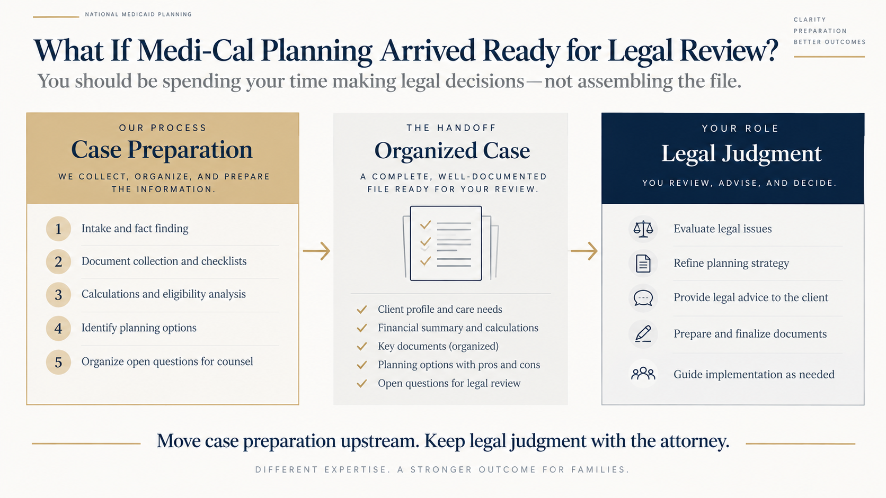
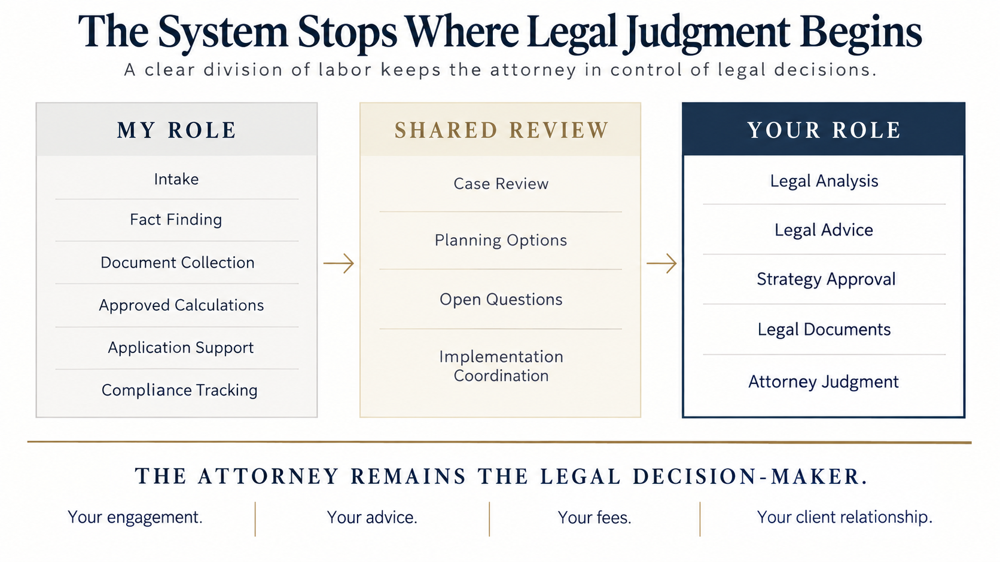
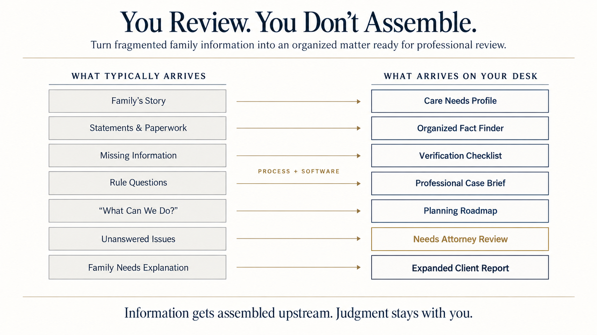
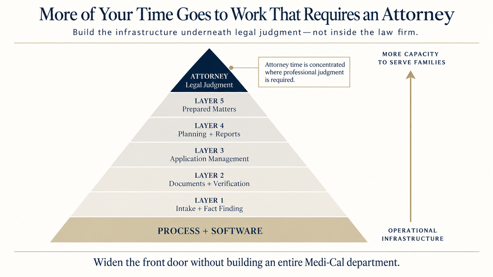

How a Certified Medicaid Planner complements an estate planning practice · for Shoup Legal
What if your next Medi-Cal client arrived with the file already assembled?
And what if the next twenty did, without you adding a single hire?
Hi Andrea, thank you for the seat at your seminar. What struck me is that you and I are talking to the same families about the same problem. So I put this together to show you how I work with those families, what I hand an attorney, and what I never touch. If you only read one page, read this one.
The cliff notes
I am not a lawyer and I don't give legal advice. I find the families, assemble the file, implement the insurance piece, and keep them compliant. The attorney decides what they may do.
How I'd like to use the thirty minutes
Introduce myself and what I do; explain where I fit alongside an estate planning attorney and why I'm not your competition; walk you through the process; show you examples of the work it produces; give you a quick demonstration of the software; and leave plenty of time for your questions.
What I do
Find the families first, through the website interview and the free report.
Run the assessment and produce the reports, with every conclusion marked established or needing review.
Implement the financial instruments at step 6, as a licensed insurance agent.
Coordinate the application and the renewals so nobody in your office has to chase the county.
What I never do
Practice law, draft legal documents, or choose among competing readings of a rule.
Tell a family a strategy is available before the attorney has said so.
My path to this work wasn't a straight line. It took shape over years of working in financial services and technology, but the personal connection started much earlier, with my own family.
I grew up on the South Side of Chicago, raised by a single mother. When I was 17, she was diagnosed with breast cancer. As her health declined, I found myself facing questions that many of the families I work with face today: How do you care for a parent who is getting sicker? How do you handle the financial decisions? And how do you keep everything together while watching someone you love decline? There were so many moving pieces, and the emotional weight made everything harder. That experience stayed with me.
I began my career in financial services with Merrill Lynch and American Express Financial Advisors. Later, I moved into consulting in New York as a technical trainer, traveling to companies to teach their teams. As the projects became more technical, I became more interested in how the technology worked, and eventually developed the skills to build software myself.
Over time, I saw a way to bring those experiences together.
I founded National Medicaid Planning to work directly with families navigating the care and financial decisions I knew could feel overwhelming. Then I built Medicaid Planning Pro to support that work and help the attorneys, planners, and other professionals who serve those families. The software helps gather information, analyze the family's situation, organize the case, and keep the Medicaid process on track.
The two businesses serve different roles, but they share the same purpose: making a difficult process easier to understand and manage, both for families and for the professionals helping them.
What I'd like to show you next is the case for how this fits an estate planning practice: the work that reaches your desk already assembled, the line where your judgment takes over, and what that does for your practice. After that, the process itself, the reports it produces, and a demonstration of the software.
Background
Certified Medicaid Planner (CMP®)
Licensed insurance agent, California
Financial services: Merrill Lynch, American Express Financial Advisors
Technology consulting and training, New York
1 · The problemWhat if Medi-Cal planning arrived ready for legal review?
You should be spending your time making legal decisions, not assembling the file.
The story
A family comes into an estate planning office because Mom is entering a nursing home and spending $12,000 a month.
Before the attorney can really advise them, someone has to figure out what Mom owns, who owns each account, what income she receives, what care she needs, what documents are missing, which Medi-Cal rules apply, and what questions still need legal review.
A lot of work happens before the attorney gets to the part only the attorney can do.
The metaphor
The surgeon shouldn't have to prep the operating room. The attorney is the surgeon, the one whose judgment matters. My job is to have the patient, the records and the instruments ready before the attorney walks in.

Move case preparation upstream. Keep legal judgment with the attorney.
A Medi-Cal matter holds two different kinds of work
Collecting and organizing information
Gathering and verifying documents
Applying approved calculations
Managing the application
Tracking ongoing compliance
Providing legal advice and exercising legal judgment
My goal is to separate those jobs, so the last one gets your time.
2 · The boundaryThe system stops where legal judgment begins
I'm not trying to replace the attorney. I'm building around the attorney.
The story
Imagine the software identifies three possible planning paths. It doesn't tell the family "this is what you should do."
Instead, it organizes the facts, calculates the numbers under approved rules, lays out the possible strategies, and puts the questions in front of the attorney. The attorney reviews. The attorney decides. Then the process moves forward.
That distinction is central to how I've designed the business. I've broken the whole process into nine steps, and at every step I can tell you who is responsible, what gets done and what gets produced. That's the framework section, a few pages on.
The metaphor
I'm building the rails, not driving the train. The process keeps the case moving; the attorney controls the legal destination.

The attorney remains the legal decision-maker.
What stays yours, always
Your engagement letter
Your legal advice
Your professional judgment
Your fees
Your relationship with the client
Strategies that need legal review don't reach the family until you've reviewed them
Financial products are handled separately under my insurance license and disclosed in writing
3 · The deliverableYou review. You don't assemble.
You review. You don't assemble.
The story
Instead of a family arriving with a grocery bag of statements and saying "we think this is everything," imagine opening a matter and finding the care situation documented, every account listed, ownership identified, statements attached, income verified, missing information flagged, the applicable rules sourced, and the calculations shown.
And anything the system can't determine is clearly marked: needs attorney review.
Now the attorney starts much farther down the field. On the next pages I'll show you the kinds of work product the process produces before and after attorney review: the family's free report, the professional brief, the expanded report, the estimate, the proposal and the asset protection plan.
The metaphor
Instead of bringing you a box of puzzle pieces, I bring you the assembled picture, with the pieces that need legal judgment deliberately left for you.

Information gets assembled upstream. Judgment stays with you.
Three things the picture doesn't show
Every list the family gives is attested complete by the family, in writing, before it reaches you.
Every figure in the brief is traced to a document or to a verified rule; nothing is typed in.
The expanded client report goes out only after your review, so the family sees your name on the answer.
4 · The benefitWhat does this do for your practice?
More of your time goes to work that requires an attorney.
The story
Suppose a family isn't ready for a large legal engagement. Today that can be a hard client to serve economically, because gathering everything needed to understand the case can take hours before any meaningful legal work begins.
Under this model the process absorbs most of that preparation. A $300,000 case that would take your office an afternoon to assemble arrives assembled, and you enter when legal judgment is needed.
That makes it possible to serve families who would otherwise be uneconomical to serve, without turning your office into an intake, document-chasing and application-processing operation.
The metaphor
I'm trying to widen the front door without filling your waiting room.

Widen the front door without building an entire Medi-Cal department.
For your practice, that can mean
Less attorney and staff time on intake and document chasing
Organized matters before substantive legal review
Application administration and renewals handled outside your office
A way to serve matters that may not support a full engagement today
Your control over every legal recommendation, and your fees billed directly
I'm not trying to take the legal work away from you. I'm trying to take everything around the legal work and make it easier for you to do.
How this protects youThe question you'd be right to ask, answered in three sentences
How this protects you
If a non-lawyer's software says something wrong, whose name is on it? Here is how the process is built so that question never gets a bad answer.
Three rules the software cannot break
Nothing reaches a family as a strategy until an attorney has signed off. The software will not release it.
Every figure is either arithmetic on the facts the family gave, or traced to a California rule that a person has verified against its official source and approved for use. Anything else is marked "needs review."
Every unknown is written on the page, with who resolves it. Nothing missing is treated as zero, and nothing is left out because it was inconvenient.
If the county disagrees
The report shows both ways California counts a transfer penalty, the DHCS practice and the codified regulation, and says which one the calculation used.
The undue-hardship position is prepared before the application is filed, not after the county answers.
You choose how much of it to use
Take only the fact finder. Take the brief and do the rest in house. Or take the application and renewals off your desk too. Each piece stands on its own.
You can tell me which questions you consider legal, and the software treats them that way.
Money, stated plainly
I do not set the fees. The planning fee is quoted and collected by the Medicaid planning attorney's firm I work through (the Senior Medicaid Planner in this framework), under its own agreement with the family.
You bill the family directly for legal work under your own engagement letter. If the family comes to you first, your fees are yours and nothing changes.
As an insurance agent I may be paid commissions on products, disclosed in writing before any purchase. The full disclosure statement is in the proposal (Appendix F).
Whoever the family calls first
owns the relationship. If they come to you, you keep the client and the legal work exactly as today, and send me the financial piece if you want to.
If they come to me, you are the attorney of record from step 5 on, and I hand you the file assembled.
A quick note about the reportsBefore the framework
A quick note before you look at the sample reports
You'll see the reports my software produces in the appendix. When you flip through them you'll notice a lot of lines that say "Not answered, needs review." So let me get ahead of the question.
Why so many errors?
They aren't errors. They're questions the software refuses to answer until a person has verified the rule or the fact behind them.
Here's the idea in one sentence: the software does the arithmetic on the facts a family gives it, and it will not apply a California rule until that rule has been checked against its official source and approved for use. Every time it declines, it says so on the report, in plain words, along with who has to resolve it.
I built it that way on purpose. A number a family sees on a report tends to become a promise in their mind. So the only numbers that show up as "established" are the ones the software can actually stand behind, like how long the savings last at the current cost of care. Everything else waits for a person, and on the legal questions that person is you.
On the Thompson sample there are seven of these. Each one says what wasn't decided and why, and the professional brief ends with a glossary of the few technical words it can't avoid.
The seven on the Thompson sample
Which assets count. Not decided. California's rules on what is counted, exempt or unavailable aren't applied by the software yet, so it won't guess.
Whether the assets are under the limit. Can't be decided until the assets are classified.
Whether the income fits. California's income rules aren't approved for use in the software yet.
What a spouse at home may keep. The spousal rules aren't built in yet. Margaret is widowed, but the question is listed so it's visibly unanswered rather than silently missing.
The monthly share of cost. Depends on the income decision and the allowances.
The home and estate recovery. Those rules aren't built in yet; the home is evaluated separately.
Planning versus simply applying. The software won't call a plan "better" until the asset and income decisions are made, because there's nothing to compare it against.
And one that isn't a gap at all: transfers. The family said there were no gifts, so the penalty rules weren't run. That records what the family said; it isn't a finding.
Case study 1Single applicant · Who does what
Margaret, 82, widowed, in a nursing facility
My software's single-applicant test case (no home), walked through all nine steps so you can see who does what. The appendix follows the Thompson sample family, who also own a home. Every name and figure is made up. The married version of this case, with the dollar illustration behind it, is in the appendix.
Care setting
Nursing facility
California · not yet applied
Monthly cost of care
$12,000
Monthly income
$3,000
net, started over a year ago
Bank savings
$300,000
in her sole name, available
Home · other assets
None
Gifts or transfers, 5 years
None
What the family sees first Established
The monthly funding gap is $9,000. Paying privately, the $300,000 lasts about 33 months. This is arithmetic on the figures given, and it's the only number in the family's free report that isn't marked as needing review.
Step
Who does it
What happens for Margaret
Handed to whom
1 Understand
Care Consultant
Confirms nursing-facility level of care and the $12,000 quote (Appendix A).
Care Needs Profile → Medicaid Planner
2 Organize
Daughter + Medicaid Planner
Bank statements for the $300,000, income award letters, no deed, no transfers; every list attested complete.
Organized Financial Fact Finder → Medicaid Planner
3 Assess
Medicaid Planner + Senior Planner
Readiness Assessment: private-pay projection established; eligibility, transfer and strategy questions filed as Needs review until California's rules are approved for use.
Family summary → daughter · Professional brief → Attorney
4 Plan
Medicaid Planner + Senior Planner
Roadmap: spend-down versus a planned gift with a care-funding reserve; the home question is moot; timing of the application.
Medicaid Planning Roadmap → daughter and Attorney
5 Legal
Local Attorney
Reviews the brief and the roadmap; confirms which strategy may be implemented; prepares the gift documentation, updates the power of attorney, advises on the transfer penalty and undue-hardship rules.
Legal documents + confirmation → Medicaid Planner; expanded report issued to the family after review
6 Financial
Richard Ladson, as licensed insurance agent
Reserve account set up to pay the facility through the penalty period; income directed appropriately.
Confirmation → Medicaid Planner
7 Apply
Applications Specialist
Medi-Cal application filed with the county after the plan is executed; documents from step 2 reused.
Approval notice → family, Planner, Attorney
8 Protect
Local Attorney
No home, so estate recovery exposure is limited to the reserve; attorney confirms beneficiary designations and the estate plan.
Protection memo → family
9 Maintain
Medicaid Planner + Senior Planner + Local Attorney
Annual renewal and share-of-cost reporting by the planners; the attorney handles any change in the rules, a later gift question, or estate work.
Renewal file → county; questions → Attorney
The processOne family · One roadmap · A coordinated team
One Family. One Roadmap. A Coordinated Team.
This is the whole thing on one page: who hands what to whom. Steps 5 and 6 run side by side and come back together before the application.
Phase 1 · Assess
1
Understand · Understand your care needs · Care Planning Care Consultant Produces: Care Needs Profile
↓
2
Organize · Organize your finances · Financial Organization Client + Medicaid Planner Produces: Organized Financial Fact Finder
Two things are true at once: the family follows one roadmap, and different specialists step in when they're needed.
The teamThe right professional at the right step
A Coordinated Medicaid Planning Team
No one person does all of this, me included. I coordinate the specialists around the family's needs, and each one does the work they're licensed for.
The client and family sit at the center.
I coordinate across all nine steps and hand each specialized service to the person licensed to do it. I'm also the licensed insurance agent, so the insurance side of step 6 stays with me; I bring in an investment advisor when investments are involved, and legal work always goes to the attorney.
I followed one sample family, Margaret Thompson and her daughter Susan, through every document my process produces. Appendices C, D and E are the three reports my software generated for this family on 2026-09-28, embedded unchanged. Appendices B, F and G are three reports I added to the software this week, also generated by it and embedded unchanged. Each tab names its step, who produces it and who receives it. Tabs H to M are left for the documents other professionals produce.
Tab
Document
Step
Produced by
Received by
A
Care Needs Profile
1 Understand
Care Consultant
Family · Medicaid Planner
B
Lead magnet 1 · Confidential Planning Estimate (software output)
3 Assess (first contact)
Software, with every report
Family
C
Lead magnet 2 · Your Long-Term Care Planning Report (software output)
3 Assess
Software, after the interview
Family
D
Professional Case Brief
3 Assess → 5 Legal
Medicaid Planner + Senior Planner
Local Attorney · Advisor
E
Your Expanded Long-Term Care Planning Report
5 Legal (after review)
Planner, issued on the attorney's sign-off
Family
F
Proposal and team disclosure (software output)
4 Plan
Medicaid Planner, issued from the advisor workspace
Family · every team member
G
Asset Protection Plan (software output)
4 Plan
Medicaid Planner, issued after attorney review
Family · Attorney · Advisor · Applications Specialist
H
Attorney legal documents
5 Legal
Local Attorney
Family · Planner
I
Financial documents
6 Financial
Insurance Agent · Investment Advisor
Family · Planner
J
Medi-Cal application
7 Apply
Applications Specialist
County · Family · Planner
K
Communications with Medi-Cal
7 Apply
Applications Specialist
Family · Planner · Attorney when needed
L
Asset and estate-recovery protection
8 Protect
Local Attorney
Family · Planner
N–S
The married case study, and the framework pages I use with families (roadmap, nine steps, family journey, professional process, deliverables)
—
Medicaid Planner
Family · Attorney
M
Compliance and renewals
9 Maintain
Medicaid Planner + Senior Planner + Local Attorney
Family · County
The Thompson family is fictional. The appendix uses the sample reports' illustrated scenario ($150,000 retained after 15 assumed months of interim care and a $15,000 allowance), which is an unverified illustration; the case studies earlier in this briefing use the software's calculated gift-plus-reserve method on the test case. Wording standing throughout: draft pending counsel language review.
Appendix A · Care Needs ProfileStep 1 · Understand
Care Needs Profile
What the Care Consultant produces at step 1, and what the Medicaid assessment reads from it. Every fact is made up; the Thompson family is followed through the whole appendix.
Care Needs Profile · Sample
Margaret Thompson
Prepared by the Care Consultant · Reviewed with the family · Date of assessment 2026-09-15 Standing: Established care recommendation · feeds steps 2 and 3
1. Who this is for
NameMargaret Thompson
Age82
StateCalifornia
Marital statusWidowed
Planning forDaughter (Susan Thompson) planning for her mother
Decision authorityDurable power of attorney held by Susan (2019); health care directive on file
LivesAlone until admission, in her own single-story home in Sacramento (about $900,000, no mortgage)
Primary physicianDr. R. Menon, Sutter Medical Group
2. Diagnosis and cognition
Alzheimer's disease, diagnosed 2023; neurologist's note of 2026-06 records moderate-stage dementia (MoCA 14/30).
Disoriented to time and place most afternoons; repeats questions; does not recognize the home aide who has visited twice weekly since March.
Other conditions: hypertension, type 2 diabetes (oral medication), osteoarthritis of both knees.
Medications: seven daily; two missed-dose events and one double-dose event found in the pill organizer in the last month.
3. Functional status
Activity of daily living
Status
Observed
Bathing
Needs hands-on help
Will not bathe unless prompted and assisted; two near-falls in the shower
Dressing
Needs help
Puts on layers out of order; needs cueing and assistance with fasteners
Toileting
Needs help
Occasional incontinence at night; needs help with hygiene
Transferring
Needs standby help
Uses a walker; unsteady rising from a chair
Eating
Independent with set-up
Eats when a meal is placed in front of her; skips meals otherwise
Continence
Partial
Daytime continent; nighttime incontinence three to four times a week
Instrumental activities (medications, meals, finances, transport, housekeeping): dependent in all six.
4. Safety
Left the stove on twice in August; smoke alarm activated once.
Found walking outside at 2 a.m. on 2026-08-30; returned by a neighbor. Wandering risk: high.
Two falls in the last six months, one with an emergency-room visit (no fracture).
5. Level of care recommendation
Recommended: skilled nursing facility with a secured memory-care unit
Margaret needs 24-hour supervision, hands-on help with four of six activities of daily living, nursing oversight of medications and diabetes, and a secured environment for wandering. Assisted living with memory care was considered and rejected: her nighttime incontinence, transfer needs and medication complexity exceed what the two local memory-care communities accept. Home care at the required level (two caregivers, 24 hours) was priced at $22,000 to $26,000 a month and is not sustainable.
Care settingNursing facility (memory care unit)
Facility identifiedOak Grove Care Center, Sacramento; private room available from 2026-10-15
Monthly cost quoted$12,000 (private pay, includes memory-care supplement)
Expected durationLong-term; no return home anticipated
Level-of-care basisMeets nursing-facility level of care on the physician's assessment of 2026-09-10
6. The family's goals and Margaret's preferences
Margaret said in 2023, while able to decide, that she wanted to stay near Susan and "not be a burden about money." Susan wants her mother safe first and the home question settled second.
Susan lives 20 minutes away, works full time, and can visit three times a week. No other family in California.
Faith community: St. Anne's; the family would like weekly transport to services if the facility offers it.
7. Care team and timeline
Care ConsultantSherene Woolcock
NeurologistDr. S. Park, UC Davis
Home aide (current)ComfortCare, 8 hours a week, ends at placement
Placement target2026-10-15
ReassessmentNinety days after placement, then annually
Triggers for reviewHospitalization, a fall with injury, a change in facility or cost
8. What this profile hands to the next step
Fact the Medicaid assessment reads
Value
Recorded on
Care setting
Nursing facility
Facility contract and physician assessment
Monthly cost of care
$12,000
Facility quote of 2026-09-12
Memory or cognitive condition
Yes, Alzheimer's disease
Neurologist's note of 2026-06
Planning for
A parent, by an agent under a durable power of attorney
POA of 2019
Expected date of institutionalization
2026-10-15
Admission agreement
The profile records care facts and the care recommendation only. It draws no conclusion about Medicaid eligibility, which assets count, or what a spouse may keep; those belong to steps 3 and 4.
Appendix B · Lead magnet 1Generated by the software · Thompson sample · 2026-09-28
Confidential Planning Estimate
The one-page estimate my software now generates with every report, from the interview answers and the saved projection. It shows what stays with the family only when the strategy has been calculated under recorded rules; for this sample the strategy figures were planted as an illustration (see Appendix G), so the page shows them.
National Medicaid Planning · EstimateConfidential Planning Estimate
National Medicaid Planning · Confidential Planning Estimate
for Margaret
Requested by Susan Thompson · 2026-09-29 · California / Medi-Cal
This estimate uses only the answers you gave online. That is enough to show the shape of the problem and the size of the opportunity. It is not enough to act on: the figures will move once the full picture is in under California's rules, and some of them could move a great deal.
Two things are true at once. Every month at the current pace, money leaves the family's hands that no plan can bring back. And most families in this position can keep more than they expect, if they look before the choices narrow.
What you told us
What is Margaret's marital status?Widowed
In which state does Margaret live?California
How old is Margaret?82
Average monthly income from all sources (excluding long-term care insurance)$3,000.00
Care settingNursing facility
Monthly cost of care$12,000.00
Does Margaret have a long-term care insurance policy?not asked
Does Margaret have any disabled children?not asked
Does Margaret own a residence?Yes, about $900,000.00
Savings and funds counted (bank accounts and deposits)$300,000.00
Other assets (investments, retirement, other holdings)None reported
Total debts, including any mortgagenot asked
What the numbers say
According to the limited information you have provided, Margaret has total assets at risk of $300,000.00. The home is evaluated separately and is not counted here.
At $12,000.00 a month for care and $3,000.00 of counted income, the monthly change in position is -$9,000.00; the recorded money covers the quoted cost in full for 33 months, and then it is gone. Every month at this pace is money that leaves the family's hands for good. Established
Based on this information, about $237,000.00 (79%) of that can stay with the family through Medi-Cal planning, even though Margaret is already receiving care: $130,000.00 stays with Margaret as the allowance under the asset limit; about $107,000.00 can go to the family. About $63,000.00 would go to care during the 7-month penalty period the gift creates. Established
These figures assume that you start the planning process immediately and that there is no major change in the rules. They are calculated under the rules recorded with this assessment, which a detailed review must test; they are not a benefits decision.
What this estimate cannot tell you
Whether money or property that changed hands in the last few years changes the timing.
Whether the home is protected or exposed.
What Margaret's income does to the share of cost once Medi-Cal begins.
Which of these steps the family has the legal authority to take.
Each of these can move the figures above, in either direction. A full review answers them from documents, not from memory.
By the way, most people believe you cannot get Medi-Cal if you have given away money or property within the past few years. That is not always true. If you know the methods the rules allow, a family can often keep a meaningful part of its savings and still qualify. So do not give up because gifts have been made.
Before the call, questions worth sitting with
If care continues at this pace, what happens in month 34?
Which decisions are you close to making now, a gift, a sale, a large withdrawal, that cannot be undone once the rules have counted them?
Who has the authority to act for Margaret if Margaret can no longer sign?
What did Margaret say should happen with the savings, and who was it meant to help?
If a plan could keep most of this with the family, what would you need to know before you said yes?
The next step is a free 15-minute call
We walk through this page with you line by line, tell you which figures would change with the full picture, and you decide whether a full review is worth your time. Nothing to bring and nothing to sign. If it is not worth it, we will say so.
The rules behind these figures turn on dates: when care began, when money moved, when an application is filed. The earlier we look, the more choices remain.
Schedule a free 15-minute consultation: 909-602-4125 · nationalmedicaidplanning.com
Prepared by National Medicaid Planning · Richard Ladson, Certified Medicaid Planner. This estimate is educational, not legal advice, and not a promise that anything can be protected.
The wording of this summary is a draft that has not yet been reviewed by a lawyer.
Appendix C · Lead magnet 2Generated by the software · Thompson sample · 2026-09-28
Your Long-Term Care Planning Report
The family report exactly as my software generated it for the Thompson interview (this is the report the family sees in the slideshow and downloads with the button). Every figure below came out of the assessment engine; I didn't edit anything.
National Medicaid Planning
A personalized financial assessment
Your Long-Term Care Planning Report
Prepared for
Susan Thompson
Regarding Margaret
Medi-Cal · California · assessment of 2026-09-29
Prepared by
National Medicaid Planning
Richard Ladson · Certified Medicaid Planner
This is a preliminary summary of the figures you gave us. It is not legal advice, not a benefits decision, and not a promise that anything can be protected. The wording of this summary is a draft that has not yet been reviewed by a lawyer.
National Medicaid PlanningYour Long-Term Care Planning Report
02 / Executive summary
Your situation at a glance
A clear view of the figures you gave us and what they mean over time.
Counted savings and funds
$300,000.00
From the figures you gave
Monthly cost of care
$12,000.00
As quoted to you
Monthly income counted
$3,000.00
Available toward care
Monthly change in position
-$9,000.00
Income less the cost of care each month
Months fully covered
33 months
At the current figures
What this could mean for your family
If the recorded figures stay the same, the net position after 12 months would be $192,000.00. Month 34 is the first month the recorded money would not fully cover the quoted cost. Exploring options now can help your family make the next decisions with more information.
What this summary does not show
It does not show an amount that planning could keep or pass to family. Whether an option is permitted, and what it would preserve, are legal questions a planning review works through with your documents.
National Medicaid PlanningYour Long-Term Care Planning Report
03 / Financial projection
How long could the recorded money last?
At $12,000.00 a month for care and $3,000.00 of counted income, the monthly change in position is -$9,000.00.
Net position at each month end, by month from the start of the projection. Labelled points are figures from the saved schedule.
What we counted
Amount
Counted starting funds
$300,000.00
Counted monthly income
$3,000.00
Quoted monthly cost of care
$12,000.00
Other monthly costs counted
$0.00
What these figures do not include
Home (H1) is not cash or a bank balance, so it is not counted as money available to pay for care.
What the recorded money would do
Selected months, read from the saved monthly schedule
Month
Starts
Net position at month end
Unmet cost to date
Month 3
2026-11-29
$273,000.00
$0.00
Month 12
2027-08-29
$192,000.00
$0.00
Month 24
2028-08-29
$84,000.00
$0.00
Month 34 — first month not fully covered
2029-06-29
-$6,000.00
$6,000.00
Month 60
2031-08-29
-$240,000.00
$240,000.00
Figure
Amount
Monthly change in position
-$9,000.00
Months fully covered
33 months
First month not fully covered
month 34
Net position at the end of the period
-$240,000.00
Unmet funding requirement across the period
$240,000.00
These are running net position figures: each month's counted income is treated as available before that month's costs. A negative position is the part of the quoted cost that the recorded money does not cover. It is not a bank balance, not a bill anybody has paid, and not a debt anybody owes.
What this projection assumes
this is a monthly NET-POSITION projection, not a cash-timing model: each month's counted net income is treated as available before that month's modelled payments. That is an arithmetic convention and says nothing about when money actually arrives or when a bill actually falls due
a negative position is a funding shortfall of that size -- the part of the stated costs the stated resources do not cover. It is not spendable negative cash, not a payment anybody made and not a debt anybody incurred
the selected care quote is held at its quoted figure for the whole horizon, and so is the counted net income; no increase, indexation or benefit adjustment is applied
no investment return, interest, dividend or other growth is added to the stated funds; the only money credited in any month is the counted net income, and the only money credited at the baseline is the counted starting balance
an income or cost with a recorded start and no recorded end is held to run for the whole horizon; an end nobody recorded is not read as an end
only funds, income and costs the case records as belonging to the person being projected are counted; no contribution from a spouse, a relative or anyone else is assumed
no month is treated as thirty days; the schedule advances by calendar months from the stated baseline date
this is an arithmetic projection of the stated facts, not an eligibility date, a determination that funds will be spent, or advice to spend them
This projection keeps the recorded costs and income the same, adds no investment returns and no other expenses. It does not mean all savings must be spent.
National Medicaid PlanningYour Long-Term Care Planning Report
04 / Family questions
Your questions, answered in context
What this assessment found, and what a detailed review would test.
How long would the money we recorded cover the cost we were quoted?
What this assessment found
Established: the recorded money covers the quoted cost in full for 33 months of the 60 months projected; month 34 is the first month not fully covered, and the unmet requirement across the period is $240,000.00.
Where it stands
Established
What a planning review would investigate
We would go through every account, benefit and cost again, confirm the quoted rate, and check what else could change the monthly figure.
Does this tell us whether we qualify for Medicaid?
What this assessment found
This requires professional review before we can give you a reliable answer.
Where it stands
Not answered — needs review
What a planning review would investigate
A planning review would work through the income and resource rules for this programme and this state, with the documents behind each figure.
Could money or property given away in the past affect this?
What this assessment found
This was not part of this assessment, so nothing here answers it. A planning review would look at it.
Where it stands
Not assessed
What a planning review would investigate
A planning review would list every transfer, its date, what was received for it, and how the state's transfer rules treat each one.
Does this report protect or preserve anything?
What this assessment found
This requires professional review before we can give you a reliable answer.
Where it stands
Not answered — needs review
What a planning review would investigate
A planning review would establish which options are actually available in this state, what each one costs, and what it does and does not do.
What happens to the home?
What this assessment found
This requires professional review before we can give you a reliable answer.
Where it stands
Not answered — needs review
What a planning review would investigate
A planning review would look at the home's ownership, its equity, who lives there, and how this state handles it during and after care.
The right planning approach depends on complete financial records, care needs, wishes and the Medi-Cal rules that apply.
National Medicaid PlanningYour Long-Term Care Planning Report
05 / Planning options
What might planning change?
The options this assessment modelled, and what each would and would not do.
Pay privately from the applicant's own funds
Net position at the end of the projected period: -$240,000.00.
Apply under the ordinary Medicaid eligibility rules
Net position at the end of the projected period: not projected.
This option is always listed. It could not be assessed here, which does not mean the applicant is ineligible: nothing has assessed that yet.
Whether this is available depends on rules this review does not yet cover: which resources count, resource eligibility, income eligibility, the monthly amount payable to the facility. Nothing here says it is or is not available.
None of these is a recommendation, and none of them shows a saving. Whether an option is permitted, what it would cost and what it would actually preserve are legal questions this assessment does not answer.
No saving has been established
Planning figures that depend on the program's rules, such as how much could stay with family and when coverage could begin, are worked out with your attorney after a detailed review of your documents.
What is established, and what still needs review
Question
Where it stands
What was found
How long the stated funds would last
Established
Established: the recorded money covers the quoted cost in full for 33 months of the 60 months projected; month 34 is the first month not fully covered, and the unmet requirement across the period is $240,000.00.
Which resources count
Not answered — needs review
Resource eligibility
Not answered — needs review
Income eligibility
Not answered — needs review
Community spouse allowance
Not answered — needs review
Consequences of past transfers
Not assessed
Monthly amount payable to the facility
Not answered — needs review
Treatment of the home and the estate
Not answered — needs review
Comparison with ordinary eligibility
Not answered — needs review
Savings attributable to planning
Not answered — needs review
Two ways California counts a transfer penalty
California's held official sources describe two different ways to count a transfer penalty, and no held source says which one governs. This report shows both side by side. It does not decide which is legally correct.
Method A: DHCS administrative practice (ACWDL / MC 176 PI)
Administrative practice, not codified regulation
The county divides the uncompensated value that put the person over the $130,000 property limit by the statewide Average Private Pay Rate, rounds down to whole months, and imposes no partial month.
The period counts from the month of the transfer. DHCS states a maximum of 30 months from the date of the transfer, citing a 1990 draft section that the official regulations do not contain.
The rate is $14,440 for cases with an application or institutionalization date on or after January 1, 2026 (ACWDL 26-03). No later rate is on file.
Look-back: 30 months, starting the month before the application, with January 2024 through December 2025 not reviewed and the months under review phasing back in from July 1, 2026 (ACWDL 25-18).
Not calculated Month count: not calculated. This was not part of this assessment, so nothing here answers it. A planning review would look at it.
Sources: ACWDL 26-03 (DHCS, February 9, 2026), ACWDL 25-18 (DHCS, October 9, 2025), MC 176 PI worksheet (Rev. 07/2022)
Method B: Codified regulation (22 CCR §50411)
Codified regulation
The excess net value over the property limit is divided by the monthly maintenance need in effect in each month after the transfer.
The regulation prints no private-pay rate, no rounding rule and no maximum, and the period begins on the first of the month after the transfer.
The official regulations print no look-back period. 22 CCR §50408(b) presumes that transfers made more than two years before the initial application were not made to establish eligibility.
Not calculable Month count: unknown. The regulation does not say which maintenance-need figure applies, and the AFDC payment level behind 22 CCR §50603 is not held. No dollar is on file.
Under both methods a transfer is presumed to have been made to qualify unless the person shows otherwise (22 CCR §50409(b); ACWDL 25-18), and undue hardship must be reviewed before any penalty is imposed (WIC §14015.1(b); ACWDL 25-18). Federal law (42 U.S.C. §1396p(c)(1)(E)(iv)) and WIC §14015(a)(1) speak of partial months, which Method A does not impose. That difference is recorded here, not resolved.
National Medicaid PlanningYour Long-Term Care Planning Report
06 / Review and process
What happens next?
A careful review comes before any transfer, sale, product purchase or application timing decision.
Information to verify
Care and incomeFacility contract, invoices, income and deductions
Savings and propertyStatements, ownership, deed, debt and occupancy
History and authorityPrior gifts, trusts, capacity and authority documents
A clear path through the planning work
01Understand care needs and get organized
02Assess finances and the program rules that apply
03Compare approaches, costs, control and contingencies
04Put a supported plan in place and complete the application
05Follow through on approval, payment, ongoing requirements and the estate
Before your consultation
Gather statements for every account, benefit and cost listed in this summary, so the figures can be confirmed rather than reported.
Write down any money or property given away, sold or transferred, with dates and what was received for it.
Bring the care provider's written quote and anything the provider has said about what it includes.
Note the questions in this summary that matter most to you, so the consultation starts where you need it to.
National Medicaid PlanningYour Long-Term Care Planning Report
07 / Next steps
Before you spend down more of your family's savings
A complete review can establish which choices are available and what each could mean for care and financial security.
Your next step
Schedule a free 15-minute consultation
Richard Ladson, Certified Medicaid Planner, offers a free 15-minute consultation through National Medicaid Planning.
Please do not transfer, gift, sell or move assets on the basis of this summary alone. Bring the account statements, care invoices, income information, home deed and any trust or authority documents you have.
Important information
This preliminary summary is educational. The figures assume the costs and income you recorded stay the same and add no other expenses or investment returns. Eligibility is decided by the responsible agency. Legal services, when needed, are provided by licensed attorneys.
Appendix D · Professional Case BriefGenerated by the software · Thompson sample · 2026-09-28
Professional Case Brief
The brief my software generated for the same assessment, for me and for reviewing counsel, in the case-brief order I use: case at a glance, key calculations, strategy analysis, assumptions and unresolved issues, evidence and next steps, then appendices A to F (financial facts, strategy comparison, government rules and traceability, conversation guide, the family's pages with advisor notes, and the technical record).
National Medicaid PlanningMedicaid Planning Pro — Professional Case Brief
01 / Cover
National Medicaid Planning
Medicaid Planning Pro — Professional Case Brief
Client
Margaret
California • 2026-09-29
Prepared for Richard Ladson, Certified Medicaid Planner, and reviewing counsel
Professional use. Every figure below is read from the saved assessment; nothing on this page was recalculated at render time and no figure was supplied by a caller. Consumer wording is DRAFT_PENDING_COUNSEL_LANGUAGE_REVIEW.
Draft wording: The wording of this summary is a draft that has not yet been reviewed by a lawyer.
National Medicaid PlanningMedicaid Planning Pro — Professional Case Brief
02 / Case at a glance
Case at a glance
Margaret · age 82 · Widowed · care setting: Nursing facility · family contact: Susan Thompson · California (Medi-Cal)
2.1 Financial snapshot
Financial snapshot
Item
Amount
Evidence / status
bank accounts
$300,000.00
Recorded; classification unresolved
home
$900,000.00
Recorded; classification unresolved
Counted starting funds
$300,000.00
Reported by the family; documents pending
Counted monthly income
$3,000.00
Reported by the family; documents pending
Quoted monthly cost of care
$12,000.00
Reported by the family; documents pending
Other monthly costs counted
$0.00
Reported by the family; documents pending
Monthly change in position
-$9,000.00
Calculated from the reported figures
Months fully covered
33 months
Calculated from the reported figures
First month not fully covered
month 34
Calculated from the reported figures
Net position at the end of the period
-$240,000.00
Calculated from the reported figures
Unmet funding requirement across the period
$240,000.00
Calculated from the reported figures
Professional assessment
Detailed professional review is warranted before any option is discussed with the family as available. Withheld on this assessment, and open until resolved: Which resources count; Resource eligibility; Income eligibility; Community spouse allowance; Monthly amount payable to the facility; Treatment of the home and the estate; Comparison with ordinary eligibility; Savings attributable to planning. Not assessed on this run: Consequences of past transfers. Nothing in this brief is a benefits decision, and no saving is established beyond a resolved planning conclusion stated as such.
National Medicaid PlanningMedicaid Planning Pro — Professional Case Brief
03 / Financial calculations
Key calculations and projections
A. Monthly funding gap
Counted monthly income $3,000.00 − quoted monthly cost of care $12,000.00 − other monthly costs counted $0.00 = monthly change in position -$9,000.00, as saved. A negative change is the monthly funding gap.
B. Private-pay timeline
Counted starting funds $300,000.00 at a monthly change in position of -$9,000.00: 33 months fully covered of the 60 months projected; first month not fully covered: month 34. Read from the saved schedule; no division was performed here.
C. 24-month comparison
Net position at the end of month 24: $84,000.00; unmet cost to date at month 24: $0.00. Both read from the saved schedule.
D. Allocation
No allocation: the planning strategy is withheld — The planning estimate could not be calculated because the rules it needs could not be looked up for this case. The case does not yet say which set of program rules applies to it: the applicant group (for example, aged), the coverage pathway (for example, nursing-facility care) and the care setting. Until all three are recorded, no rule is looked up, because guessing the missing one could select the wrong rules.
Interpretation
Each block restates a saved figure beside the saved figures it was produced from; nothing was recalculated at render time and no operand was supplied by a caller. A negative change in position is the part of the quoted monthly cost the recorded money does not cover, not a debt. Months fully covered is a projection at constant figures, not an eligibility date. An allocation, where one is stated, is a calculation under the policy recorded with this assessment and is not a benefits decision; where none is stated, no figure was inferred in its place.
National Medicaid PlanningMedicaid Planning Pro — Professional Case Brief
04 / Strategy analysis
Strategy analysis
3.1 Candidate strategy
Candidate strategy: partial gift with interim funding
Purpose
Illustrated allocation
Mechanics
Principal tradeoff
Required verification
Status
Keep part of the counted funds with family while a reserve pays for care through the penalty period the gift causes.
none stated
A documented gift on the date counsel sets; a reserve held in the applicant's name to pay the provider until benefits begin; the application timed to the resource snapshot.
Control of the gifted funds passes to the recipient; the reserve is spent on care; the penalty period delays coverage.
Classification of every holding; transfer history inside the look-back; the divisor and method counsel confirms; the application date.
Withheld: The planning estimate could not be calculated because the rules it needs could not be looked up for this case. The case does not yet say which set of program rules applies to it: the applicant group (for example, aged), the coverage pathway (for example, nursing-facility care) and the care setting. Until all three are recorded, no rule is looked up, because guessing the missing one could select the wrong rules. Not answered — needs review
3.2 Other approaches and separate issues
Retained-cash variant. The same structure with a larger reserve and a smaller gift. Not calculated. Counted starting funds as saved: $300,000.00
Annuity variant. An income stream under the programme's annuity rules instead of a cash reserve. Not calculated: no engine or catalog row on this assessment enumerates it.
Trust-based planning. A transfer into a trust rather than an outright gift. Not calculated: no engine or catalog row on this assessment enumerates it.
Income-related review. Whether income is within the programme's limit, and what a share of cost would require. No value: withheld. Counted monthly income as saved: $3,000.00.Not answered — needs review
Home and estate review. Whether the home is excluded, and what estate recovery could reach. No value: withheld. Residence as recorded: Yes, about $900,000.00.Not answered — needs review
Ordinary eligibility. Applying under the ordinary rules with no gift. No value: withheld. Scenario “Apply under the ordinary Medicaid eligibility rules”: not available as saved.Not answered — needs review
No stacked benefit
The approaches above draw on the same counted funds and are alternatives, not additions. Their figures, where any are stated, are not additive, and no combination is modelled or recommended by this assessment.
National Medicaid PlanningMedicaid Planning Pro — Professional Case Brief
05 / Assumptions and unresolved issues
Assumptions and unresolved issues
4.1 Modeled assumptions
Assumption
Source
Status
this is a monthly NET-POSITION projection, not a cash-timing model: each month's counted net income is treated as available before that month's modelled payments. That is an arithmetic convention and says nothing about when money actually arrives or when a bill actually falls due
Private-pay projection
Saved with the assessment
a negative position is a funding shortfall of that size -- the part of the stated costs the stated resources do not cover. It is not spendable negative cash, not a payment anybody made and not a debt anybody incurred
Private-pay projection
Saved with the assessment
the selected care quote is held at its quoted figure for the whole horizon, and so is the counted net income; no increase, indexation or benefit adjustment is applied
Private-pay projection
Saved with the assessment
no investment return, interest, dividend or other growth is added to the stated funds; the only money credited in any month is the counted net income, and the only money credited at the baseline is the counted starting balance
Private-pay projection
Saved with the assessment
an income or cost with a recorded start and no recorded end is held to run for the whole horizon; an end nobody recorded is not read as an end
Private-pay projection
Saved with the assessment
only funds, income and costs the case records as belonging to the person being projected are counted; no contribution from a spouse, a relative or anyone else is assumed
Private-pay projection
Saved with the assessment
no month is treated as thirty days; the schedule advances by calendar months from the stated baseline date
Private-pay projection
Saved with the assessment
this is an arithmetic projection of the stated facts, not an eligibility date, a determination that funds will be spent, or advice to spend them
Private-pay projection
Saved with the assessment
Material calculation gap
Strategy — Strategy calculation: The planning estimate could not be calculated because the rules it needs could not be looked up for this case. The case does not yet say which set of program rules applies to it: the applicant group (for example, aged), the coverage pathway (for example, nursing-facility care) and the care setting. Until all three are recorded, no rule is looked up, because guessing the missing one could select the wrong rules. (resolved by more research: a rule or a fact still has to be established; holds up: Strategy savings)
Resource classification — Resource classification: Which of the family's assets count toward the asset limit has not been decided. That decision follows the state's rules on what is counted, exempt or unavailable, and this software does not apply those rules yet. (resolved by engineering: this part of the software is not built yet; holds up: Resource classification)
Resource classification — Resource classification: Whether the countable assets are under the limit cannot be decided until the assets have been classified (see 'Which resources count'). (resolved by engineering: this part of the software is not built yet; holds up: Resource eligibility)
Income eligibility — Income eligibility: Whether the income fits the program's rules has not been decided. The state's income rules are not yet approved for use in this software. (resolved by engineering: this part of the software is not built yet; holds up: Income eligibility)
Spousal impoverishment — Spousal impoverishment: What a spouse at home may keep has not been decided. The spousal rules are not yet built into this software. (resolved by engineering: this part of the software is not built yet; holds up: Community spouse allowance)
Post eligibility patient pay — Post eligibility patient pay: The monthly share of cost has not been worked out. It depends on the income decision and the allowances, neither of which is decided yet. (resolved by engineering: this part of the software is not built yet; holds up: Patient pay amount)
Home protection and estate recovery — Home protection and estate recovery: How the home is treated during care, and whether the state can recover from the estate afterward, has not been decided. Those rules are not yet built into this software. (resolved by engineering: this part of the software is not built yet; holds up: Home and estate treatment)
Strategy — Strategy evaluation: The list of planning options in this report is descriptive only. Which of them applies, and what it would save, waits on the asset and income decisions above. The planned gift is calculated separately and carries its own standing. (resolved by engineering: this part of the software is not built yet; holds up: Ordinary eligibility comparison)
4.2 Questions counsel and planning team must resolve
Which resources count: what resolves it? Which of the family's assets count toward the asset limit has not been decided. That decision follows the state's rules on what is counted, exempt or unavailable, and this software does not apply those rules yet.
Resource eligibility: what resolves it? Whether the countable assets are under the limit cannot be decided until the assets have been classified (see 'Which resources count').
Income eligibility: what resolves it? Whether the income fits the program's rules has not been decided. The state's income rules are not yet approved for use in this software.
Community spouse allowance: what resolves it? What a spouse at home may keep has not been decided. The spousal rules are not yet built into this software.
Monthly amount payable to the facility: what resolves it? The monthly share of cost has not been worked out. It depends on the income decision and the allowances, neither of which is decided yet.
Treatment of the home and the estate: what resolves it? How the home is treated during care, and whether the state can recover from the estate afterward, has not been decided. Those rules are not yet built into this software.
Comparison with ordinary eligibility: what resolves it? This report cannot yet compare planning against simply applying under the ordinary rules, because the asset and income decisions above have not been made. Without that comparison, no plan can be called better than the alternative; a private-pay projection only shows what paying privately would do.
Savings attributable to planning: what resolves it? The planning estimate could not be calculated because the rules it needs could not be looked up for this case. The case does not yet say which set of program rules applies to it: the applicant group (for example, aged), the coverage pathway (for example, nursing-facility care) and the care setting. Until all three are recorded, no rule is looked up, because guessing the missing one could select the wrong rules.
Not assessed on this run
Consequences of past transfers
Standing instructions
Review the source receipts in Appendix F, obtain documents still missing, and confirm the authenticity and completeness of preserved documents.
Resolve the domains listed above before any option is discussed as available.
Re-run the assessment once facts change; this package stays as it is and a correction is issued as a new one.
National Medicaid PlanningMedicaid Planning Pro — Professional Case Brief
06 / Evidence and next steps
Evidence and next steps
5.1 Records to obtain
Records to obtain
What they confirm
Care and income
Facility contract, invoices, income and deductions
Savings and property
Statements, ownership, deed, debt and occupancy
History and authority
Prior gifts, trusts, capacity and authority documents
No document preserved by this system is named on this revision, so every record above is still to be obtained.
5.2 Professional work sequence
01Verify assets, income, expenses, transfer history and authority documents against the records listed in 5.1.
02Confirm with counsel the classification of every holding and the transfer-penalty method that governs, and replace each withheld conclusion with a calculated one only where the facts and policy allow.
03Compare ordinary eligibility against the planned-gift approach on the confirmed facts, stating what each would and would not do.
04Quote the planning fee and the attorney's fee in writing before the family commits to anything.
Decision needed
Whether to proceed to a detailed planning review. Its scope, price and document list are set out with the family before any transfer, sale, product purchase or application-timing decision. This brief authorises none of those and establishes no saving.
National Medicaid PlanningMedicaid Planning Pro — Professional Case Brief
07 / Appendix A
Appendix A — Financial facts
A1 — Asset inventory
Asset
Reported value
Provisional exclusion
Preliminary countable
bank accounts
$300,000.00
not assessed
counted in starting funds
home
$900,000.00
not assessed
not counted in starting funds
Counted starting funds (projection subtotal)
$300,000.00
—
as saved
Legal classification of these holdings is unresolved. Countability, exemption and availability are separate legal questions, and no conclusion on this assessment answers them. The inventory above is what the family stated, nothing more.
A2 — Calculation schedule
Measure
Method
Result
Counted starting funds
Cash and deposit balances the projection counted, as saved
$300,000.00
Counted monthly income
Counted monthly net income, as saved
$3,000.00
Quoted monthly cost of care
The selected care quote, as saved
$12,000.00
Other monthly costs counted
Additional monthly costs counted, as saved
$0.00
Monthly change in position
Counted income less care cost and other counted costs, as saved
-$9,000.00
Months fully covered
Months of the saved schedule fully covered at constant figures
33 months
First month not fully covered
Read from the saved schedule
month 34
Net position at the end of the period
Closing position of the saved schedule
-$240,000.00
Unmet funding requirement across the period
Cumulative shortfall as saved; monthly figures are never summed
$240,000.00
Planning allocation
Not calculated
withheld — The planning estimate could not be calculated because the rules it needs could not be looked up for this case. The case does not yet say which set of program rules applies to it: the applicant group (for example, aged), the coverage pathway (for example, nursing-facility care) and the care setting. Until all three are recorded, no rule is looked up, because guessing the missing one could select the wrong rules.
A3 — Model assumptions and sensitivity
The projection holds the recorded costs and income constant for every month, adds no investment return and no other expense, and treats each month's counted income as available before that month's costs. A planning allocation, where one resolved, is calculated under the policy recorded with this assessment on the assumptions saved with it. Sensitivity: a change in the facility's rate or level of care, in income or its deductions, in the classification of any holding, an earlier transfer, or a different application date changes every figure in this appendix; none of those is modelled here.
What this projection assumes
this is a monthly NET-POSITION projection, not a cash-timing model: each month's counted net income is treated as available before that month's modelled payments. That is an arithmetic convention and says nothing about when money actually arrives or when a bill actually falls due
a negative position is a funding shortfall of that size -- the part of the stated costs the stated resources do not cover. It is not spendable negative cash, not a payment anybody made and not a debt anybody incurred
the selected care quote is held at its quoted figure for the whole horizon, and so is the counted net income; no increase, indexation or benefit adjustment is applied
no investment return, interest, dividend or other growth is added to the stated funds; the only money credited in any month is the counted net income, and the only money credited at the baseline is the counted starting balance
an income or cost with a recorded start and no recorded end is held to run for the whole horizon; an end nobody recorded is not read as an end
only funds, income and costs the case records as belonging to the person being projected are counted; no contribution from a spouse, a relative or anyone else is assumed
no month is treated as thirty days; the schedule advances by calendar months from the stated baseline date
this is an arithmetic projection of the stated facts, not an eligibility date, a determination that funds will be spent, or advice to spend them
A4 — Evidence required
Document or information
Why it matters
Recent statements for every bank and investment account
Confirms balances, ownership and who can use each account
Income statements and any deductions
Confirms what income is available toward care
The care facility agreement and recent invoices
Confirms the actual monthly cost of care
Deed, mortgage and occupancy details for the home
The home is reviewed separately from savings
Records of gifts, sales or transfers
Dates and amounts decide how any transfer is treated
Existing trusts, wills and estate documents
Shows current arrangements and intentions
Power of attorney or other authority documents
Identifies who may act and sign
Written estimates for any planning costs
Replaces any placeholder cost with an actual figure
Review standard
Every figure in this appendix is read from the saved assessment. A figure is established only where the saved conclusion is resolved, withheld where the engine declined to conclude and said why, and not assessed where nothing evaluated the question. No figure in this brief was supplied by a caller or recalculated at render time.
National Medicaid PlanningMedicaid Planning Pro — Professional Case Brief
08 / Appendix B
Appendix B — Strategy comparison
Every approach below is described, not recommended. A figure appears only where the saved assessment carries it; otherwise the approach reads “not calculated”, and nothing was inferred in its place.
B1 — Partial gift with interim funding
A documented gift of part of the counted funds, with a reserve retained to pay the provider through the penalty period the gift causes. The reserve is spent on care and the gift passes out of the applicant's control. It requires the transfer-penalty method, the resource limit and the application date to be established.
Figures: Not calculated: The planning estimate could not be calculated because the rules it needs could not be looked up for this case. The case does not yet say which set of program rules applies to it: the applicant group (for example, aged), the coverage pathway (for example, nursing-facility care) and the care setting. Until all three are recorded, no rule is looked up, because guessing the missing one could select the wrong rules.. Transfer consequences as saved: No value: not assessed. Not answered — needs review
B2 — Retained-cash variant
The same structure with a larger reserve and a smaller gift, trading preserved funds for a shorter period of private payment and more cash under the applicant's control. No engine on this assessment models the variant, so no figure is stated for it.
Figures: Not calculated. Counted starting funds as saved: $300,000.00
B3 — Annuity variant
Converting part of the counted funds into an income stream under the programme's annuity rules instead of holding a cash reserve. Whether such an annuity is permitted, and how its payments are treated, are legal questions this assessment does not answer.
Figures: Not calculated: no engine or catalog row on this assessment enumerates it.
B4 — Trust-based planning
Transferring assets into a trust rather than making an outright gift, which changes control, tax treatment and how the transfer is counted. Trust treatment is a governed domain this assessment does not evaluate.
Figures: Not calculated: no engine or catalog row on this assessment enumerates it.
B5 — Income-related review
Whether income is at, under or over the programme's limit, and what a share of cost or a qualified income trust would require. The counted monthly income is recorded; the income rules are applied by counsel.
Figures: No value: withheld. Counted monthly income as saved: $3,000.00. Not answered — needs review
B6 — Home and estate review
Whether the home is excluded, what equity limit applies, and what estate recovery could reach after death. The home's recorded value, if any, is stated below; its treatment is not decided here.
Figures: No value: withheld. Residence as recorded: Yes, about $900,000.00. Not answered — needs review
B7 — Ordinary eligibility
Applying under the ordinary rules with no gift, spending counted funds on care until the resource limit is reached. The comparison shows what a strategy would change; it is not available unless the assessment modelled it.
Figures: No value: withheld. Scenario “Apply under the ordinary Medicaid eligibility rules”: not available as saved. Not answered — needs review
The approaches above draw on the same counted funds and are alternatives, not additions. Their figures, where any are stated, are not additive, and no combination is modelled or recommended by this assessment.
National Medicaid PlanningMedicaid Planning Pro — Professional Case Brief
09 / Appendix C
Appendix C — Government rules
C1 — Policy citations and verification standing
No policy citation is attached to this assessment: no policy dimension resolved, so nothing was cited. That is a refusal, not an omission.
C2 — Policy dimensions asked
No policy dimension was asked on this assessment.
C3 — Policy components the transfer engine consumed
The transfer engine consumed no policy component on this assessment.
C4 — Penalty methods on record for this jurisdiction
Two ways California counts a transfer penalty
California's held official sources describe two different ways to count a transfer penalty, and no held source says which one governs. This report shows both side by side. It does not decide which is legally correct.
Method A: DHCS administrative practice (ACWDL / MC 176 PI)
Administrative practice, not codified regulation
The county divides the uncompensated value that put the person over the $130,000 property limit by the statewide Average Private Pay Rate, rounds down to whole months, and imposes no partial month.
The period counts from the month of the transfer. DHCS states a maximum of 30 months from the date of the transfer, citing a 1990 draft section that the official regulations do not contain.
The rate is $14,440 for cases with an application or institutionalization date on or after January 1, 2026 (ACWDL 26-03). No later rate is on file.
Look-back: 30 months, starting the month before the application, with January 2024 through December 2025 not reviewed and the months under review phasing back in from July 1, 2026 (ACWDL 25-18).
Not calculated Month count: not calculated. This was not part of this assessment, so nothing here answers it. A planning review would look at it.
Sources: ACWDL 26-03 (DHCS, February 9, 2026), ACWDL 25-18 (DHCS, October 9, 2025), MC 176 PI worksheet (Rev. 07/2022)
Method B: Codified regulation (22 CCR §50411)
Codified regulation
The excess net value over the property limit is divided by the monthly maintenance need in effect in each month after the transfer.
The regulation prints no private-pay rate, no rounding rule and no maximum, and the period begins on the first of the month after the transfer.
The official regulations print no look-back period. 22 CCR §50408(b) presumes that transfers made more than two years before the initial application were not made to establish eligibility.
Not calculable Month count: unknown. The regulation does not say which maintenance-need figure applies, and the AFDC payment level behind 22 CCR §50603 is not held. No dollar is on file.
Under both methods a transfer is presumed to have been made to qualify unless the person shows otherwise (22 CCR §50409(b); ACWDL 25-18), and undue hardship must be reviewed before any penalty is imposed (WIC §14015.1(b); ACWDL 25-18). Federal law (42 U.S.C. §1396p(c)(1)(E)(iv)) and WIC §14015(a)(1) speak of partial months, which Method A does not impose. That difference is recorded here, not resolved.
National Medicaid PlanningMedicaid Planning Pro — Professional Case Brief
10 / Appendix C
Appendix C — Conclusion traceability
Conclusion
Standing
Verification path
Outstanding dependency
How long the stated funds would last private_pay_projection
Established
Produced by Other deterministic; saved inputs: starting funds $300,000.00; monthly income $3,000.00; monthly care cost $12,000.00; other monthly costs $0.00; horizon 60 months; baseline 2026-09-29
—
Which resources count resource_classification
Not answered — needs review
Withheld; no calculation ran; waits on Which resources count
Which of the family's assets count toward the asset limit has not been decided. That decision follows the state's rules on what is counted, exempt or unavailable, and this software does not apply those rules yet.
Resource eligibility resource_eligibility
Not answered — needs review
Withheld; no calculation ran; waits on Which resources count
Whether the countable assets are under the limit cannot be decided until the assets have been classified (see 'Which resources count').
Income eligibility income_eligibility
Not answered — needs review
Withheld; no calculation ran; waits on Income eligibility
Whether the income fits the program's rules has not been decided. The state's income rules are not yet approved for use in this software.
Community spouse allowance community_spouse_allowance
Not answered — needs review
Withheld; no calculation ran; waits on Spousal impoverishment
What a spouse at home may keep has not been decided. The spousal rules are not yet built into this software.
Consequences of past transfers transfer_consequences
Not assessed
Not evaluated on this run
Not assessed: nothing on this run evaluated it
Monthly amount payable to the facility patient_pay_amount
Not answered — needs review
Withheld; no calculation ran; waits on Post eligibility patient pay
The monthly share of cost has not been worked out. It depends on the income decision and the allowances, neither of which is decided yet.
Treatment of the home and the estate home_and_estate_treatment
Not answered — needs review
Withheld; no calculation ran; waits on Home protection and estate recovery
How the home is treated during care, and whether the state can recover from the estate afterward, has not been decided. Those rules are not yet built into this software.
Comparison with ordinary eligibility ordinary_eligibility_comparison
Not answered — needs review
Withheld; no calculation ran; waits on Which resources count, Resource eligibility, Income eligibility, Post eligibility patient pay
This report cannot yet compare planning against simply applying under the ordinary rules, because the asset and income decisions above have not been made. Without that comparison, no plan can be called better than the alternative; a private-pay projection only shows what paying privately would do.
Savings attributable to planning strategy_savings
Not answered — needs review
Withheld; no calculation ran; waits on Planned gift penalty, Individual resource limit
The planning estimate could not be calculated because the rules it needs could not be looked up for this case. The case does not yet say which set of program rules applies to it: the applicant group (for example, aged), the coverage pathway (for example, nursing-facility care) and the care setting. Until all three are recorded, no rule is looked up, because guessing the missing one could select the wrong rules.
Review statuses
Established. The saved assessment resolved this conclusion under the recorded facts and policy; it carries a value and names the engine that produced it.
Withheld. The engine declined to conclude and recorded why. No value is carried, and nothing missing was treated as zero.
Not assessed. Nothing on this run evaluated the question. Absence is not a finding either way.
Illustration. Wording that explains a mechanism without a figure from this case. Where it appears in this brief, no amount is stated beside it.
National Medicaid PlanningMedicaid Planning Pro — Professional Case Brief
11 / Appendix D
Appendix D — Family conversation guide
Confirm the financial picture
Does the monthly change on page 3 of the family's report match what the family is experiencing? What other expenses are missing?
How long does the family feel comfortable continuing at this level of spending?
Understand Margaret's priorities
What else must the savings provide for care, personal needs and security?
What has Margaret said about the home, the savings, and who should make decisions?
Explore options and tradeoffs
What would the family need to understand about giving up control of any transferred funds?
What concerns about timing, cost, risk or family roles need to be addressed?
Invite a clear decision
Who has authority to act, and who else should join the discussion?
Would the family like the scope, price and document list for a detailed planning review?
Distinguish private-pay spending from costs a strategy could actually avoid, and say plainly that no saving has been established by this assessment.
For the conversation with the family. Each line is a question this assessment leaves open, in the words of the saved finding.
Which resources count: confirm what is missing and who resolves it — Which of the family's assets count toward the asset limit has not been decided. That decision follows the state's rules on what is counted, exempt or unavailable, and this software does not apply those rules yet.
Resource eligibility: confirm what is missing and who resolves it — Whether the countable assets are under the limit cannot be decided until the assets have been classified (see 'Which resources count').
Income eligibility: confirm what is missing and who resolves it — Whether the income fits the program's rules has not been decided. The state's income rules are not yet approved for use in this software.
Community spouse allowance: confirm what is missing and who resolves it — What a spouse at home may keep has not been decided. The spousal rules are not yet built into this software.
Monthly amount payable to the facility: confirm what is missing and who resolves it — The monthly share of cost has not been worked out. It depends on the income decision and the allowances, neither of which is decided yet.
Treatment of the home and the estate: confirm what is missing and who resolves it — How the home is treated during care, and whether the state can recover from the estate afterward, has not been decided. Those rules are not yet built into this software.
Comparison with ordinary eligibility: confirm what is missing and who resolves it — This report cannot yet compare planning against simply applying under the ordinary rules, because the asset and income decisions above have not been made. Without that comparison, no plan can be called better than the alternative; a private-pay projection only shows what paying privately would do.
Savings attributable to planning: confirm what is missing and who resolves it — The planning estimate could not be calculated because the rules it needs could not be looked up for this case. The case does not yet say which set of program rules applies to it: the applicant group (for example, aged), the coverage pathway (for example, nursing-facility care) and the care setting. Until all three are recorded, no rule is looked up, because guessing the missing one could select the wrong rules.
Always cover
That the figures are arithmetic on stated facts, not a benefits decision.
That a negative closing position is an unmet funding requirement, not a debt.
That no saving, preservation or protection has been established by this assessment.
That documents behind each figure still need to be produced and preserved.
Advisor guidance
Speak from the family's own pages in Appendix E, not from this brief, which is for the planner and reviewing counsel. Say what is established and what is withheld in those words, and describe no option as available until the domains it waits on are resolved.
National Medicaid PlanningMedicaid Planning Pro — Professional Case Brief
12 / Appendix E
Appendix E — The family's report, page by page, with advisor notes
The family's report, page by page, exactly as it was rendered in this package. An advisor note follows each page.
National Medicaid Planning
A personalized financial assessment
Your Long-Term Care Planning Report
Prepared for
Susan Thompson
Regarding Margaret
Medi-Cal · California · assessment of 2026-09-29
Prepared by
National Medicaid Planning
Richard Ladson · Certified Medicaid Planner
This is a preliminary summary of the figures you gave us. It is not legal advice, not a benefits decision, and not a promise that anything can be protected. The wording of this summary is a draft that has not yet been reviewed by a lawyer.
National Medicaid PlanningYour Long-Term Care Planning Report
02 / Executive summary
Your situation at a glance
A clear view of the figures you gave us and what they mean over time.
Counted savings and funds
$300,000.00
From the figures you gave
Monthly cost of care
$12,000.00
As quoted to you
Monthly income counted
$3,000.00
Available toward care
Monthly change in position
-$9,000.00
Income less the cost of care each month
Months fully covered
33 months
At the current figures
What this could mean for your family
If the recorded figures stay the same, the net position after 12 months would be $192,000.00. Month 34 is the first month the recorded money would not fully cover the quoted cost. Exploring options now can help your family make the next decisions with more information.
What this summary does not show
It does not show an amount that planning could keep or pass to family. Whether an option is permitted, and what it would preserve, are legal questions a planning review works through with your documents.
National Medicaid PlanningYour Long-Term Care Planning Report
03 / Financial projection
How long could the recorded money last?
At $12,000.00 a month for care and $3,000.00 of counted income, the monthly change in position is -$9,000.00.
Net position at each month end, by month from the start of the projection. Labelled points are figures from the saved schedule.
What we counted
Amount
Counted starting funds
$300,000.00
Counted monthly income
$3,000.00
Quoted monthly cost of care
$12,000.00
Other monthly costs counted
$0.00
What these figures do not include
Home (H1) is not cash or a bank balance, so it is not counted as money available to pay for care.
What the recorded money would do
Selected months, read from the saved monthly schedule
Month
Starts
Net position at month end
Unmet cost to date
Month 3
2026-11-29
$273,000.00
$0.00
Month 12
2027-08-29
$192,000.00
$0.00
Month 24
2028-08-29
$84,000.00
$0.00
Month 34 — first month not fully covered
2029-06-29
-$6,000.00
$6,000.00
Month 60
2031-08-29
-$240,000.00
$240,000.00
Figure
Amount
Monthly change in position
-$9,000.00
Months fully covered
33 months
First month not fully covered
month 34
Net position at the end of the period
-$240,000.00
Unmet funding requirement across the period
$240,000.00
These are running net position figures: each month's counted income is treated as available before that month's costs. A negative position is the part of the quoted cost that the recorded money does not cover. It is not a bank balance, not a bill anybody has paid, and not a debt anybody owes.
What this projection assumes
this is a monthly NET-POSITION projection, not a cash-timing model: each month's counted net income is treated as available before that month's modelled payments. That is an arithmetic convention and says nothing about when money actually arrives or when a bill actually falls due
a negative position is a funding shortfall of that size -- the part of the stated costs the stated resources do not cover. It is not spendable negative cash, not a payment anybody made and not a debt anybody incurred
the selected care quote is held at its quoted figure for the whole horizon, and so is the counted net income; no increase, indexation or benefit adjustment is applied
no investment return, interest, dividend or other growth is added to the stated funds; the only money credited in any month is the counted net income, and the only money credited at the baseline is the counted starting balance
an income or cost with a recorded start and no recorded end is held to run for the whole horizon; an end nobody recorded is not read as an end
only funds, income and costs the case records as belonging to the person being projected are counted; no contribution from a spouse, a relative or anyone else is assumed
no month is treated as thirty days; the schedule advances by calendar months from the stated baseline date
this is an arithmetic projection of the stated facts, not an eligibility date, a determination that funds will be spent, or advice to spend them
This projection keeps the recorded costs and income the same, adds no investment returns and no other expenses. It does not mean all savings must be spent.
National Medicaid PlanningYour Long-Term Care Planning Report
04 / Family questions
Your questions, answered in context
What this assessment found, and what a detailed review would test.
How long would the money we recorded cover the cost we were quoted?
What this assessment found
Established: the recorded money covers the quoted cost in full for 33 months of the 60 months projected; month 34 is the first month not fully covered, and the unmet requirement across the period is $240,000.00.
Where it stands
Established
What a planning review would investigate
We would go through every account, benefit and cost again, confirm the quoted rate, and check what else could change the monthly figure.
Does this tell us whether we qualify for Medicaid?
What this assessment found
This requires professional review before we can give you a reliable answer.
Where it stands
Not answered — needs review
What a planning review would investigate
A planning review would work through the income and resource rules for this programme and this state, with the documents behind each figure.
Could money or property given away in the past affect this?
What this assessment found
This was not part of this assessment, so nothing here answers it. A planning review would look at it.
Where it stands
Not assessed
What a planning review would investigate
A planning review would list every transfer, its date, what was received for it, and how the state's transfer rules treat each one.
Does this report protect or preserve anything?
What this assessment found
This requires professional review before we can give you a reliable answer.
Where it stands
Not answered — needs review
What a planning review would investigate
A planning review would establish which options are actually available in this state, what each one costs, and what it does and does not do.
What happens to the home?
What this assessment found
This requires professional review before we can give you a reliable answer.
Where it stands
Not answered — needs review
What a planning review would investigate
A planning review would look at the home's ownership, its equity, who lives there, and how this state handles it during and after care.
The right planning approach depends on complete financial records, care needs, wishes and the Medi-Cal rules that apply.
National Medicaid PlanningYour Long-Term Care Planning Report
05 / Planning options
What might planning change?
The options this assessment modelled, and what each would and would not do.
Pay privately from the applicant's own funds
Net position at the end of the projected period: -$240,000.00.
Apply under the ordinary Medicaid eligibility rules
Net position at the end of the projected period: not projected.
This option is always listed. It could not be assessed here, which does not mean the applicant is ineligible: nothing has assessed that yet.
Whether this is available depends on rules this review does not yet cover: which resources count, resource eligibility, income eligibility, the monthly amount payable to the facility. Nothing here says it is or is not available.
None of these is a recommendation, and none of them shows a saving. Whether an option is permitted, what it would cost and what it would actually preserve are legal questions this assessment does not answer.
No saving has been established
Planning figures that depend on the program's rules, such as how much could stay with family and when coverage could begin, are worked out with your attorney after a detailed review of your documents.
What is established, and what still needs review
Question
Where it stands
What was found
How long the stated funds would last
Established
Established: the recorded money covers the quoted cost in full for 33 months of the 60 months projected; month 34 is the first month not fully covered, and the unmet requirement across the period is $240,000.00.
Which resources count
Not answered — needs review
Resource eligibility
Not answered — needs review
Income eligibility
Not answered — needs review
Community spouse allowance
Not answered — needs review
Consequences of past transfers
Not assessed
Monthly amount payable to the facility
Not answered — needs review
Treatment of the home and the estate
Not answered — needs review
Comparison with ordinary eligibility
Not answered — needs review
Savings attributable to planning
Not answered — needs review
Two ways California counts a transfer penalty
California's held official sources describe two different ways to count a transfer penalty, and no held source says which one governs. This report shows both side by side. It does not decide which is legally correct.
Method A: DHCS administrative practice (ACWDL / MC 176 PI)
Administrative practice, not codified regulation
The county divides the uncompensated value that put the person over the $130,000 property limit by the statewide Average Private Pay Rate, rounds down to whole months, and imposes no partial month.
The period counts from the month of the transfer. DHCS states a maximum of 30 months from the date of the transfer, citing a 1990 draft section that the official regulations do not contain.
The rate is $14,440 for cases with an application or institutionalization date on or after January 1, 2026 (ACWDL 26-03). No later rate is on file.
Look-back: 30 months, starting the month before the application, with January 2024 through December 2025 not reviewed and the months under review phasing back in from July 1, 2026 (ACWDL 25-18).
Not calculated Month count: not calculated. This was not part of this assessment, so nothing here answers it. A planning review would look at it.
Sources: ACWDL 26-03 (DHCS, February 9, 2026), ACWDL 25-18 (DHCS, October 9, 2025), MC 176 PI worksheet (Rev. 07/2022)
Method B: Codified regulation (22 CCR §50411)
Codified regulation
The excess net value over the property limit is divided by the monthly maintenance need in effect in each month after the transfer.
The regulation prints no private-pay rate, no rounding rule and no maximum, and the period begins on the first of the month after the transfer.
The official regulations print no look-back period. 22 CCR §50408(b) presumes that transfers made more than two years before the initial application were not made to establish eligibility.
Not calculable Month count: unknown. The regulation does not say which maintenance-need figure applies, and the AFDC payment level behind 22 CCR §50603 is not held. No dollar is on file.
Under both methods a transfer is presumed to have been made to qualify unless the person shows otherwise (22 CCR §50409(b); ACWDL 25-18), and undue hardship must be reviewed before any penalty is imposed (WIC §14015.1(b); ACWDL 25-18). Federal law (42 U.S.C. §1396p(c)(1)(E)(iv)) and WIC §14015(a)(1) speak of partial months, which Method A does not impose. That difference is recorded here, not resolved.
National Medicaid PlanningYour Long-Term Care Planning Report
06 / Review and process
What happens next?
A careful review comes before any transfer, sale, product purchase or application timing decision.
Information to verify
Care and incomeFacility contract, invoices, income and deductions
Savings and propertyStatements, ownership, deed, debt and occupancy
History and authorityPrior gifts, trusts, capacity and authority documents
A clear path through the planning work
01Understand care needs and get organized
02Assess finances and the program rules that apply
03Compare approaches, costs, control and contingencies
04Put a supported plan in place and complete the application
05Follow through on approval, payment, ongoing requirements and the estate
Before your consultation
Gather statements for every account, benefit and cost listed in this summary, so the figures can be confirmed rather than reported.
Write down any money or property given away, sold or transferred, with dates and what was received for it.
Bring the care provider's written quote and anything the provider has said about what it includes.
Note the questions in this summary that matter most to you, so the consultation starts where you need it to.
National Medicaid PlanningYour Long-Term Care Planning Report
07 / Next steps
Before you spend down more of your family's savings
A complete review can establish which choices are available and what each could mean for care and financial security.
Your next step
Schedule a free 15-minute consultation
Richard Ladson, Certified Medicaid Planner, offers a free 15-minute consultation through National Medicaid Planning.
Please do not transfer, gift, sell or move assets on the basis of this summary alone. Bring the account statements, care invoices, income information, home deed and any trust or authority documents you have.
Important information
This preliminary summary is educational. The figures assume the costs and income you recorded stay the same and add no other expenses or investment returns. Eligibility is decided by the responsible agency. Legal services, when needed, are provided by licensed attorneys.
National Medicaid PlanningMedicaid Planning Pro — Professional Case Brief
Ending net position is read off the projection schedule. The action-debit subtotal excludes ordinary income and care costs and is not an account balance.
Scenario
Id
Standing
Ending net position (schedule)
Counted funds after action debits
Withheld
Pay privately from the applicant's own funds
baseline_private_pay
available
-$240,000.00
$300,000.00
—
Apply under the ordinary Medicaid eligibility rules
ordinary_medicaid_eligibility
not available
not stated
not stated
this needs a governed domain that is not implemented, so nothing here can say whether it is available or what it would save: resource_classification, resource_eligibility, income_eligibility, post_eligibility_patient_pay
Every strategy this run enumerated. A descriptive-only row names a strategy and establishes nothing about it.
Strategy
Id
Status
Source
Unresolved domains
Missing facts
Pay for care privately from the applicant's own funds
private_pay_baseline
Applicable
Registry
—
—
Apply under the ordinary Medicaid eligibility rules
Give part of the excess to family and reserve the rest for care
gift_plus_reserve
Unsupported
Registry
individual_resource_limit; transfer_penalty
—
F3 — Dependencies and risks
Strategy — Strategy calculation
The planning estimate could not be calculated because the rules it needs could not be looked up for this case. The case does not yet say which set of program rules applies to it: the applicant group (for example, aged), the coverage pathway (for example, nursing-facility care) and the care setting. Until all three are recorded, no rule is looked up, because guessing the missing one could select the wrong rules.
What this is about
Strategy
Where it stopped
Strategy calculation
What kind of stop
a calculation that ran and stopped at a named step
Which calculation ran
none
Does it change the result
yes, this holds up a conclusion
Who resolves it
more research: a rule or a fact still has to be established
Answers it holds up
Strategy savings
Technical note: The case does not yet say which set of program rules applies to it: the applicant group (for example, aged), the coverage pathway (for example, nursing-facility care) and the care setting. Until all three are recorded, no rule is looked up, because guessing the missing one could select the wrong rules.
Resource classification — Resource classification
Which of the family's assets count toward the asset limit has not been decided. That decision follows the state's rules on what is counted, exempt or unavailable, and this software does not apply those rules yet.
What this is about
Resource classification
Where it stopped
Resource classification
What kind of stop
a question this software does not answer yet; nothing failed, less was attempted
Which calculation ran
none
Does it change the result
yes, this holds up a conclusion
Who resolves it
engineering: this part of the software is not built yet
Answers it holds up
Resource classification
Technical note: Resource Domain V1 is design-ready and not implemented, so no deterministic code classifies a resource on this case
Never evaluated: resource_classification
Resource classification — Resource classification
Whether the countable assets are under the limit cannot be decided until the assets have been classified (see 'Which resources count').
What this is about
Resource classification
Where it stopped
Resource classification
What kind of stop
a question this software does not answer yet; nothing failed, less was attempted
Which calculation ran
none
Does it change the result
yes, this holds up a conclusion
Who resolves it
engineering: this part of the software is not built yet
Answers it holds up
Resource eligibility
Technical note: resource eligibility depends on a classification no implemented domain produces
Never evaluated: resource_classification
Income eligibility — Income eligibility
Whether the income fits the program's rules has not been decided. The state's income rules are not yet approved for use in this software.
What this is about
Income eligibility
Where it stopped
Income eligibility
What kind of stop
a question this software does not answer yet; nothing failed, less was attempted
Which calculation ran
none
Does it change the result
yes, this holds up a conclusion
Who resolves it
engineering: this part of the software is not built yet
Answers it holds up
Income eligibility
Technical note: no released, approved income-eligibility policy is configured for this scope and date
Never evaluated: income_eligibility
Spousal impoverishment — Spousal impoverishment
What a spouse at home may keep has not been decided. The spousal rules are not yet built into this software.
What this is about
Spousal impoverishment
Where it stopped
Spousal impoverishment
What kind of stop
a question this software does not answer yet; nothing failed, less was attempted
Which calculation ran
none
Does it change the result
yes, this holds up a conclusion
Who resolves it
engineering: this part of the software is not built yet
Answers it holds up
Community spouse allowance
Technical note: the community-spouse allowance domain is not implemented
Never evaluated: spousal_impoverishment
Post eligibility patient pay — Post eligibility patient pay
The monthly share of cost has not been worked out. It depends on the income decision and the allowances, neither of which is decided yet.
What this is about
Post eligibility patient pay
Where it stopped
Post eligibility patient pay
What kind of stop
a question this software does not answer yet; nothing failed, less was attempted
Which calculation ran
none
Does it change the result
yes, this holds up a conclusion
Who resolves it
engineering: this part of the software is not built yet
Answers it holds up
Patient pay amount
Technical note: patient pay depends on income eligibility and an allowance, neither of which is available
Never evaluated: post_eligibility_patient_pay
Home protection and estate recovery — Home protection and estate recovery
How the home is treated during care, and whether the state can recover from the estate afterward, has not been decided. Those rules are not yet built into this software.
What this is about
Home protection and estate recovery
Where it stopped
Home protection and estate recovery
What kind of stop
a question this software does not answer yet; nothing failed, less was attempted
Which calculation ran
none
Does it change the result
yes, this holds up a conclusion
Who resolves it
engineering: this part of the software is not built yet
Answers it holds up
Home and estate treatment
Technical note: the home-equity and estate-recovery domains are not implemented
Never evaluated: home_protection_and_estate_recovery
Strategy — Strategy evaluation
The list of planning options in this report is descriptive only. Which of them applies, and what it would save, waits on the asset and income decisions above. The planned gift is calculated separately and carries its own standing.
What this is about
Strategy
Where it stopped
Strategy evaluation
What kind of stop
a question this software does not answer yet; nothing failed, less was attempted
Which calculation ran
none
Does it change the result
yes, this holds up a conclusion
Who resolves it
engineering: this part of the software is not built yet
Answers it holds up
Ordinary eligibility comparison
Technical note: catalog standing is UNAVAILABLE: catalog strategies are enumerated and classified as descriptive, and the ordinary-eligibility comparison waits on governed domains that are not implemented. The planned-gift strategy is calculated separately and files its own standing
Never evaluated: catalog strategy availability; ordinary-eligibility comparison
Words used in this record
Domain
One area of Medicaid law, such as which assets count, transfers, or what a spouse may keep.
Engine
The part of the software that calculates one domain. ‘None’ means no calculation ran for that question.
Policy dimension
One rule the software needs, such as the look-back period or the penalty divisor, each traced to an official source.
Scope
Which set of rules a case falls under: the state, the program, the applicant group, the coverage pathway and the care setting.
Released and approved
A rule is used only after its source has been verified by a person and its use approved by the firm. Until then the software withholds rather than guesses.
Withheld
The software declined to answer and said why. Nothing missing was treated as zero.
Not assessed
Nothing on this run looked at the question.
Breakpoint
The place a calculation stopped, or a question the software does not answer yet, with who resolves it.
F4 — Policy issues recorded
No policy issue was recorded on this assessment.
F5 — Recorded asset inventory, as stated
Factual inventory only. Nothing here states whether an asset counts, is exempt or is available: no implemented domain classifies a resource.
Asset id
Type stated
Description
Value
Valued as of
Access
Ownership stated
Ownership complete
A1
Cash or deposit
bank accounts
$300,000.00
2026-09-29
Owner may liquidate
P1 (10000 bp)
yes
H1
Real property
home
$900,000.00
2026-09-29
not stated
not stated
no
Legal classification of these holdings is unresolved. Countability, exemption and availability are separate legal questions, and the resource domain that would answer them is not implemented. The inventory above is what the family stated, nothing more.
F6 — Recorded income, costs, quotes and transfers
Income id
Kind
Amount
Period
Basis
Recipient
Started
Ended
I1
not stated
$3,000.00
per month
Net cash received
P1
2025-09-29
—
Quote id
Setting
Description
Amount
Period
Quoted on
Q1
Nursing facility
—
$12,000.00
per month
2026-09-29
Collection
Stated to be complete
Assets
yes
Care quotes
no
Expenses
yes
Income
yes
Objectives
no
People
no
Transfers
yes
F7 — Private-pay projection as saved
Figure
Amount
Counted starting funds
$300,000.00
Counted monthly income
$3,000.00
Quoted monthly cost of care
$12,000.00
Other monthly costs counted
$0.00
Monthly change in position
-$9,000.00
Months fully covered
33 months
First month not fully covered
month 34
Net position at the end of the period
-$240,000.00
Unmet funding requirement across the period
$240,000.00
Monthly schedule. Opening, available and closing are net positions, not balances; recurring out is care cost plus other counted costs; action out is a modelled payment. Unmet to date is cumulative to that month and the monthly figures are never added together.
Month
Starts
Opening
Income
Available
Recurring out
Action out
Closing
Unmet to date
1
2026-09-29
$300,000.00
$3,000.00
$303,000.00
$12,000.00
—
$291,000.00
$0.00
2
2026-10-29
$291,000.00
$3,000.00
$294,000.00
$12,000.00
—
$282,000.00
$0.00
3
2026-11-29
$282,000.00
$3,000.00
$285,000.00
$12,000.00
—
$273,000.00
$0.00
4
2026-12-29
$273,000.00
$3,000.00
$276,000.00
$12,000.00
—
$264,000.00
$0.00
5
2027-01-29
$264,000.00
$3,000.00
$267,000.00
$12,000.00
—
$255,000.00
$0.00
6
2027-02-28
$255,000.00
$3,000.00
$258,000.00
$12,000.00
—
$246,000.00
$0.00
7
2027-03-29
$246,000.00
$3,000.00
$249,000.00
$12,000.00
—
$237,000.00
$0.00
8
2027-04-29
$237,000.00
$3,000.00
$240,000.00
$12,000.00
—
$228,000.00
$0.00
9
2027-05-29
$228,000.00
$3,000.00
$231,000.00
$12,000.00
—
$219,000.00
$0.00
10
2027-06-29
$219,000.00
$3,000.00
$222,000.00
$12,000.00
—
$210,000.00
$0.00
11
2027-07-29
$210,000.00
$3,000.00
$213,000.00
$12,000.00
—
$201,000.00
$0.00
12
2027-08-29
$201,000.00
$3,000.00
$204,000.00
$12,000.00
—
$192,000.00
$0.00
13
2027-09-29
$192,000.00
$3,000.00
$195,000.00
$12,000.00
—
$183,000.00
$0.00
14
2027-10-29
$183,000.00
$3,000.00
$186,000.00
$12,000.00
—
$174,000.00
$0.00
15
2027-11-29
$174,000.00
$3,000.00
$177,000.00
$12,000.00
—
$165,000.00
$0.00
16
2027-12-29
$165,000.00
$3,000.00
$168,000.00
$12,000.00
—
$156,000.00
$0.00
17
2028-01-29
$156,000.00
$3,000.00
$159,000.00
$12,000.00
—
$147,000.00
$0.00
18
2028-02-29
$147,000.00
$3,000.00
$150,000.00
$12,000.00
—
$138,000.00
$0.00
19
2028-03-29
$138,000.00
$3,000.00
$141,000.00
$12,000.00
—
$129,000.00
$0.00
20
2028-04-29
$129,000.00
$3,000.00
$132,000.00
$12,000.00
—
$120,000.00
$0.00
21
2028-05-29
$120,000.00
$3,000.00
$123,000.00
$12,000.00
—
$111,000.00
$0.00
22
2028-06-29
$111,000.00
$3,000.00
$114,000.00
$12,000.00
—
$102,000.00
$0.00
23
2028-07-29
$102,000.00
$3,000.00
$105,000.00
$12,000.00
—
$93,000.00
$0.00
24
2028-08-29
$93,000.00
$3,000.00
$96,000.00
$12,000.00
—
$84,000.00
$0.00
25
2028-09-29
$84,000.00
$3,000.00
$87,000.00
$12,000.00
—
$75,000.00
$0.00
26
2028-10-29
$75,000.00
$3,000.00
$78,000.00
$12,000.00
—
$66,000.00
$0.00
27
2028-11-29
$66,000.00
$3,000.00
$69,000.00
$12,000.00
—
$57,000.00
$0.00
28
2028-12-29
$57,000.00
$3,000.00
$60,000.00
$12,000.00
—
$48,000.00
$0.00
29
2029-01-29
$48,000.00
$3,000.00
$51,000.00
$12,000.00
—
$39,000.00
$0.00
30
2029-02-28
$39,000.00
$3,000.00
$42,000.00
$12,000.00
—
$30,000.00
$0.00
31
2029-03-29
$30,000.00
$3,000.00
$33,000.00
$12,000.00
—
$21,000.00
$0.00
32
2029-04-29
$21,000.00
$3,000.00
$24,000.00
$12,000.00
—
$12,000.00
$0.00
33
2029-05-29
$12,000.00
$3,000.00
$15,000.00
$12,000.00
—
$3,000.00
$0.00
34
2029-06-29
$3,000.00
$3,000.00
$6,000.00
$12,000.00
—
-$6,000.00
$6,000.00
35
2029-07-29
-$6,000.00
$3,000.00
-$3,000.00
$12,000.00
—
-$15,000.00
$15,000.00
36
2029-08-29
-$15,000.00
$3,000.00
-$12,000.00
$12,000.00
—
-$24,000.00
$24,000.00
37
2029-09-29
-$24,000.00
$3,000.00
-$21,000.00
$12,000.00
—
-$33,000.00
$33,000.00
38
2029-10-29
-$33,000.00
$3,000.00
-$30,000.00
$12,000.00
—
-$42,000.00
$42,000.00
39
2029-11-29
-$42,000.00
$3,000.00
-$39,000.00
$12,000.00
—
-$51,000.00
$51,000.00
40
2029-12-29
-$51,000.00
$3,000.00
-$48,000.00
$12,000.00
—
-$60,000.00
$60,000.00
41
2030-01-29
-$60,000.00
$3,000.00
-$57,000.00
$12,000.00
—
-$69,000.00
$69,000.00
42
2030-02-28
-$69,000.00
$3,000.00
-$66,000.00
$12,000.00
—
-$78,000.00
$78,000.00
43
2030-03-29
-$78,000.00
$3,000.00
-$75,000.00
$12,000.00
—
-$87,000.00
$87,000.00
44
2030-04-29
-$87,000.00
$3,000.00
-$84,000.00
$12,000.00
—
-$96,000.00
$96,000.00
45
2030-05-29
-$96,000.00
$3,000.00
-$93,000.00
$12,000.00
—
-$105,000.00
$105,000.00
46
2030-06-29
-$105,000.00
$3,000.00
-$102,000.00
$12,000.00
—
-$114,000.00
$114,000.00
47
2030-07-29
-$114,000.00
$3,000.00
-$111,000.00
$12,000.00
—
-$123,000.00
$123,000.00
48
2030-08-29
-$123,000.00
$3,000.00
-$120,000.00
$12,000.00
—
-$132,000.00
$132,000.00
49
2030-09-29
-$132,000.00
$3,000.00
-$129,000.00
$12,000.00
—
-$141,000.00
$141,000.00
50
2030-10-29
-$141,000.00
$3,000.00
-$138,000.00
$12,000.00
—
-$150,000.00
$150,000.00
51
2030-11-29
-$150,000.00
$3,000.00
-$147,000.00
$12,000.00
—
-$159,000.00
$159,000.00
52
2030-12-29
-$159,000.00
$3,000.00
-$156,000.00
$12,000.00
—
-$168,000.00
$168,000.00
53
2031-01-29
-$168,000.00
$3,000.00
-$165,000.00
$12,000.00
—
-$177,000.00
$177,000.00
54
2031-02-28
-$177,000.00
$3,000.00
-$174,000.00
$12,000.00
—
-$186,000.00
$186,000.00
55
2031-03-29
-$186,000.00
$3,000.00
-$183,000.00
$12,000.00
—
-$195,000.00
$195,000.00
56
2031-04-29
-$195,000.00
$3,000.00
-$192,000.00
$12,000.00
—
-$204,000.00
$204,000.00
57
2031-05-29
-$204,000.00
$3,000.00
-$201,000.00
$12,000.00
—
-$213,000.00
$213,000.00
58
2031-06-29
-$213,000.00
$3,000.00
-$210,000.00
$12,000.00
—
-$222,000.00
$222,000.00
59
2031-07-29
-$222,000.00
$3,000.00
-$219,000.00
$12,000.00
—
-$231,000.00
$231,000.00
60
2031-08-29
-$231,000.00
$3,000.00
-$228,000.00
$12,000.00
—
-$240,000.00
$240,000.00
What this projection assumes
this is a monthly NET-POSITION projection, not a cash-timing model: each month's counted net income is treated as available before that month's modelled payments. That is an arithmetic convention and says nothing about when money actually arrives or when a bill actually falls due
a negative position is a funding shortfall of that size -- the part of the stated costs the stated resources do not cover. It is not spendable negative cash, not a payment anybody made and not a debt anybody incurred
the selected care quote is held at its quoted figure for the whole horizon, and so is the counted net income; no increase, indexation or benefit adjustment is applied
no investment return, interest, dividend or other growth is added to the stated funds; the only money credited in any month is the counted net income, and the only money credited at the baseline is the counted starting balance
an income or cost with a recorded start and no recorded end is held to run for the whole horizon; an end nobody recorded is not read as an end
only funds, income and costs the case records as belonging to the person being projected are counted; no contribution from a spouse, a relative or anyone else is assumed
no month is treated as thirty days; the schedule advances by calendar months from the stated baseline date
this is an arithmetic projection of the stated facts, not an eligibility date, a determination that funds will be spent, or advice to spend them
F8 — Stages the engine actually executed
No calculation stage was executed for the transfer domain on this assessment, so none is drawn here. An absent trace is not a stage that passed.
The policy components the engine consumed are listed in Appendix C3.
F9 — Strategy dependencies, candidates and comparison
Every strategy below is enumerated, not recommended. Whether a strategy is available depends on the findings in this table, each shown with the standing saved on this assessment. A finding that was established stays established here; the remaining dependencies are the rows that were not. The arithmetic difference between two projections is not a legal saving. No saving is established on this assessment: the savings finding is not answered — needs review.
What strategy availability waits on, as saved
Dependency
Standing
Result
Producing engine
Limitation
Which resources count resource_classification
Not answered — needs review
No value: withheld
None
Which of the family's assets count toward the asset limit has not been decided. That decision follows the state's rules on what is counted, exempt or unavailable, and this software does not apply those rules yet.
Resource eligibility resource_eligibility
Not answered — needs review
No value: withheld
None
Whether the countable assets are under the limit cannot be decided until the assets have been classified (see 'Which resources count').
Income eligibility income_eligibility
Not answered — needs review
No value: withheld
None
Whether the income fits the program's rules has not been decided. The state's income rules are not yet approved for use in this software.
Consequences of past transfers transfer_consequences
Not assessed
No value: not assessed
None
The family said there were no gifts or transfers, so the penalty rules were not run. That records what the family said; it is not a finding that no penalty exists.
Savings attributable to planning strategy_savings
Not answered — needs review
No value: withheld
None
The planning estimate could not be calculated because the rules it needs could not be looked up for this case. The case does not yet say which set of program rules applies to it: the applicant group (for example, aged), the coverage pathway (for example, nursing-facility care) and the care setting. Until all three are recorded, no rule is looked up, because guessing the missing one could select the wrong rules.
Comparison with ordinary eligibility ordinary_eligibility_comparison
Not answered — needs review
No value: withheld
None
This report cannot yet compare planning against simply applying under the ordinary rules, because the asset and income decisions above have not been made. Without that comparison, no plan can be called better than the alternative; a private-pay projection only shows what paying privately would do.
Pay for care privately from the applicant's own funds
this needs a governed domain that is not implemented, so nothing here can say whether it is available or what it would save: resource_classification, resource_eligibility, income_eligibility, post_eligibility_patient_pay
mandatory comparison candidate; no implemented domain answers resource or income eligibility, so it is enumerated as unavailable rather than omitted
Give part of the excess to family and reserve the rest for care
gift_plus_reserve v1.0.0 · Unsupported · Registry
this needs a governed domain that is not implemented, so nothing here can say whether it is available or what it would save: individual_resource_limit, transfer_penalty
deterministic calculation in app.domain.strategies.strategy_calculator over governed policy dimensions; the penalty a gift causes comes from the transfer-penalty engine
Comparison, with nothing selected
Selected scenario: none — this software selects nothing.
Reasons
scenarios are compared on funding continuity, the projected ending net position, explicit stated costs, changes of control, the family's own stated objectives and the issues left unresolved -- in that order, and without any of them being scored against each other
the ending net position is signed. A negative one is a funding gap of that size and is reported as projected_ending_shortfall; only a non-negative position is reported as spendable funds
the private-pay baseline and the ordinary-eligibility candidate are always present, whether or not either can be projected
Rejections
ordinary_medicaid_eligibility is not comparable on figures: this needs a governed domain that is not implemented, so nothing here can say whether it is available or what it would save: resource_classification, resource_eligibility, income_eligibility, post_eligibility_patient_pay
Unresolved issues
How the home is treated during care, and whether the state can recover from the estate afterward, has not been decided. Those rules are not yet built into this software.
The monthly share of cost has not been worked out. It depends on the income decision and the allowances, neither of which is decided yet.
The planning estimate could not be calculated because the rules it needs could not be looked up for this case. The case does not yet say which set of program rules applies to it: the applicant group (for example, aged), the coverage pathway (for example, nursing-facility care) and the care setting. Until all three are recorded, no rule is looked up, because guessing the missing one could select the wrong rules.
This report cannot yet compare planning against simply applying under the ordinary rules, because the asset and income decisions above have not been made. Without that comparison, no plan can be called better than the alternative; a private-pay projection only shows what paying privately would do.
What a spouse at home may keep has not been decided. The spousal rules are not yet built into this software.
Whether the countable assets are under the limit cannot be decided until the assets have been classified (see 'Which resources count').
Whether the income fits the program's rules has not been decided. The state's income rules are not yet approved for use in this software.
Which of the family's assets count toward the asset limit has not been decided. That decision follows the state's rules on what is counted, exempt or unavailable, and this software does not apply those rules yet.
Limitations
every scenario is the same monthly net-position projection: each month's counted income is treated as available before that month's modelled payments. That is an arithmetic convention and is not proof of within-month cash timing, so 'funding continuity' below means months in which the stated resources cover the stated costs, not a guarantee that money arrives before a bill falls due
the largest projected ending figure is not a recommendation and selects nothing. A scenario that ends with more cash may be unlawful, may be unavailable, may cost something nobody stated, and may not be what the family said it wanted
no scenario here establishes a legal saving. Savings attributable to planning belong to governed domains that are not implemented, and no arithmetic difference between two projections stands in for one
F10 — Fact sources the case attributed
Client-attributed references. A stated source kind or claimed hash alone does not establish preservation or verification, and a financial or professional statement kind grants no approval. Server-preserved documents the assessment checked are listed separately below.
Source id
Kind stated
Locator
Fields
Claimed hash
Standing
intake-4
Client statement
not stated
care_setting
none stated
Attributed reference; see the pinned document receipts for preservation and verification standing
Self-contained printable HTML. No server-side PDF renderer exists in this runtime, so no PDF is produced or claimed; a browser print-to-PDF copy is made outside this system.
Consumer language standing
DRAFT_PENDING_COUNSEL_LANGUAGE_REVIEW
Catalog identity gaps
no snapshot was retrieved, so there is no payload id, version id or checksum to record
F13 — Optional explanation
The model name and prompt hash arrived with the request. They are attributed metadata: this system holds no record that any model or provider ran, and every accepted phrase was checked against the saved findings.
Item
Value
Standing
not_requested
Model name (caller-attributed)
none stated
Prompt hash (caller-attributed)
none stated
Appendix E · Expanded client reportGenerated by the software · Thompson sample · 2026-09-28
Your Expanded Long-Term Care Planning Report
The expanded report my software issued after the engagement was recorded through attorney review, from the same saved assessment. I issue it; the family gets it by secure link.
National Medicaid Planning
Your Expanded Long-Term Care Planning Report
A complete guide for your family
Prepared for
Susan Thompson
Prepared by
Richard Ladson, Certified Medicaid Planner
Program and state
Medi-Cal · California
Based on the assessment of
2026-09-29 (case revision 1)
1. Your situation at a glance
Your starting point, the cost of care, and the questions this report works through.
This report explains your recorded situation in more depth after your planning review. It is not legal advice, not a benefits decision, and not a promise that anything can be protected. The wording of this summary is a draft that has not yet been reviewed by a lawyer.
Counted starting funds
$300,000.00
Quoted monthly cost of care
$12,000.00
Counted monthly income
$3,000.00
Monthly change in position
-$9,000.00
Months fully covered
33 months
2. What we know
The facts recorded in your case, and what is still to be confirmed.
Property and accounts
What was recorded
Value
Value as of
bank accounts
$300,000.00
2026-09-29
home
$900,000.00
2026-09-29
Income
Income
Amount
How often
Income (type not recorded)
$3,000.00
per month
Cost of care
Care
Quoted amount
How often
Quoted on
Nursing facility
$12,000.00
per month
2026-09-29
How to read this. These are the facts as they were given and accepted into your case. Whether a particular item counts toward a program limit, and how the home is treated, are separate legal questions; this list does not answer them.
Still to be confirmed
Home (H1) is not cash or a bank balance, so it is not counted as money available to pay for care.
3. How care affects savings
If private payment continues at the recorded figures.
Figure
Amount
Monthly change in position
-$9,000.00
Months fully covered
33 months
First month not fully covered
month 34
Net position at the end of the period
-$240,000.00
Unmet funding requirement across the period
$240,000.00
Selected months from the saved monthly schedule. Every figure is read from the schedule as saved; months not shown are in the professional brief.
Month
Starts
Net position at month end
Unmet cost to date
Month 1
2026-09-29
$291,000.00
$0.00
Month 3
2026-11-29
$273,000.00
$0.00
Month 6
2027-02-28
$246,000.00
$0.00
Month 12
2027-08-29
$192,000.00
$0.00
Month 18
2028-02-29
$138,000.00
$0.00
Month 24
2028-08-29
$84,000.00
$0.00
Month 34 — first month not fully covered
2029-06-29
-$6,000.00
$6,000.00
Month 36
2029-08-29
-$24,000.00
$24,000.00
Month 48
2030-08-29
-$132,000.00
$132,000.00
Month 60
2031-08-29
-$240,000.00
$240,000.00
What this projection assumes
this is a monthly NET-POSITION projection, not a cash-timing model: each month's counted net income is treated as available before that month's modelled payments. That is an arithmetic convention and says nothing about when money actually arrives or when a bill actually falls due
a negative position is a funding shortfall of that size -- the part of the stated costs the stated resources do not cover. It is not spendable negative cash, not a payment anybody made and not a debt anybody incurred
the selected care quote is held at its quoted figure for the whole horizon, and so is the counted net income; no increase, indexation or benefit adjustment is applied
no investment return, interest, dividend or other growth is added to the stated funds; the only money credited in any month is the counted net income, and the only money credited at the baseline is the counted starting balance
an income or cost with a recorded start and no recorded end is held to run for the whole horizon; an end nobody recorded is not read as an end
only funds, income and costs the case records as belonging to the person being projected are counted; no contribution from a spouse, a relative or anyone else is assumed
no month is treated as thirty days; the schedule advances by calendar months from the stated baseline date
this is an arithmetic projection of the stated facts, not an eligibility date, a determination that funds will be spent, or advice to spend them
How to read this projection. Each month's counted income is treated as available before that month's costs. A negative net position is the part of the quoted cost the recorded money does not cover. Reaching a program limit does not by itself establish eligibility.
4. What is established, and what still needs review
Each question this review considered, and where it stands.
How long the stated funds would last Established
Established: the recorded money covers the quoted cost in full for 33 months of the 60 months projected; month 34 is the first month not fully covered, and the unmet requirement across the period is $240,000.00.
Which resources count Not answered — needs review
This requires professional review before we can give you a reliable answer.
Resource eligibility Not answered — needs review
This requires professional review before we can give you a reliable answer.
Income eligibility Not answered — needs review
This requires professional review before we can give you a reliable answer.
Community spouse allowance Not answered — needs review
This requires professional review before we can give you a reliable answer.
Consequences of past transfers Not assessed
This was not part of this assessment, so nothing here answers it. A planning review would look at it.
Monthly amount payable to the facility Not answered — needs review
This requires professional review before we can give you a reliable answer.
Treatment of the home and the estate Not answered — needs review
This requires professional review before we can give you a reliable answer.
Comparison with ordinary eligibility Not answered — needs review
This requires professional review before we can give you a reliable answer.
Savings attributable to planning Not answered — needs review
This requires professional review before we can give you a reliable answer.
Two ways California counts a transfer penalty
California's held official sources describe two different ways to count a transfer penalty, and no held source says which one governs. This report shows both side by side. It does not decide which is legally correct.
Method A: DHCS administrative practice (ACWDL / MC 176 PI)
Administrative practice, not codified regulation
The county divides the uncompensated value that put the person over the $130,000 property limit by the statewide Average Private Pay Rate, rounds down to whole months, and imposes no partial month.
The period counts from the month of the transfer. DHCS states a maximum of 30 months from the date of the transfer, citing a 1990 draft section that the official regulations do not contain.
The rate is $14,440 for cases with an application or institutionalization date on or after January 1, 2026 (ACWDL 26-03). No later rate is on file.
Look-back: 30 months, starting the month before the application, with January 2024 through December 2025 not reviewed and the months under review phasing back in from July 1, 2026 (ACWDL 25-18).
Not calculated Month count: not calculated. This was not part of this assessment, so nothing here answers it. A planning review would look at it.
Sources: ACWDL 26-03 (DHCS, February 9, 2026), ACWDL 25-18 (DHCS, October 9, 2025), MC 176 PI worksheet (Rev. 07/2022)
Method B: Codified regulation (22 CCR §50411)
Codified regulation
The excess net value over the property limit is divided by the monthly maintenance need in effect in each month after the transfer.
The regulation prints no private-pay rate, no rounding rule and no maximum, and the period begins on the first of the month after the transfer.
The official regulations print no look-back period. 22 CCR §50408(b) presumes that transfers made more than two years before the initial application were not made to establish eligibility.
Not calculable Month count: unknown. The regulation does not say which maintenance-need figure applies, and the AFDC payment level behind 22 CCR §50603 is not held. No dollar is on file.
Under both methods a transfer is presumed to have been made to qualify unless the person shows otherwise (22 CCR §50409(b); ACWDL 25-18), and undue hardship must be reviewed before any penalty is imposed (WIC §14015.1(b); ACWDL 25-18). Federal law (42 U.S.C. §1396p(c)(1)(E)(iv)) and WIC §14015(a)(1) speak of partial months, which Method A does not impose. That difference is recorded here, not resolved.
5. Questions families ask
Short answers from your saved assessment, and what a careful review establishes.
How long would the money we recorded cover the cost we were quoted?
What this review found
Established: the recorded money covers the quoted cost in full for 33 months of the 60 months projected; month 34 is the first month not fully covered, and the unmet requirement across the period is $240,000.00.
What a detailed review investigates
We would go through every account, benefit and cost again, confirm the quoted rate, and check what else could change the monthly figure.
Does this tell us whether we qualify for Medicaid?
What this review found
This requires professional review before we can give you a reliable answer.
What a detailed review investigates
A planning review would work through the income and resource rules for this programme and this state, with the documents behind each figure.
Could money or property given away in the past affect this?
What this review found
This was not part of this assessment, so nothing here answers it. A planning review would look at it.
What a detailed review investigates
A planning review would list every transfer, its date, what was received for it, and how the state's transfer rules treat each one.
Does this report protect or preserve anything?
What this review found
This requires professional review before we can give you a reliable answer.
What a detailed review investigates
A planning review would establish which options are actually available in this state, what each one costs, and what it does and does not do.
What happens to the home?
What this review found
This requires professional review before we can give you a reliable answer.
What a detailed review investigates
A planning review would look at the home's ownership, its equity, who lives there, and how this state handles it during and after care.
6. Planning options
The options this review modelled, and what each would and would not do.
Pay privately from the applicant's own funds
Net position at the end of the projected period: -$240,000.00.
Apply under the ordinary Medicaid eligibility rules
Net position at the end of the projected period: not projected.
This option is always listed. It could not be assessed here, which does not mean the applicant is ineligible: nothing has assessed that yet.
Whether this is available depends on rules this review does not yet cover: which resources count, resource eligibility, income eligibility, the monthly amount payable to the facility. Nothing here says it is or is not available.
None of these is a recommendation, and none of them shows a saving. Whether an option is permitted, what it would cost and what it would actually preserve are legal questions this assessment does not answer.
No saving has been established
Planning figures that depend on the program's rules, such as how much could stay with family and when coverage could begin, are worked out with your attorney after a detailed review of your documents.
7. What could change the result
What the figures in this report depend on.
What this projection assumes
this is a monthly NET-POSITION projection, not a cash-timing model: each month's counted net income is treated as available before that month's modelled payments. That is an arithmetic convention and says nothing about when money actually arrives or when a bill actually falls due
a negative position is a funding shortfall of that size -- the part of the stated costs the stated resources do not cover. It is not spendable negative cash, not a payment anybody made and not a debt anybody incurred
the selected care quote is held at its quoted figure for the whole horizon, and so is the counted net income; no increase, indexation or benefit adjustment is applied
no investment return, interest, dividend or other growth is added to the stated funds; the only money credited in any month is the counted net income, and the only money credited at the baseline is the counted starting balance
an income or cost with a recorded start and no recorded end is held to run for the whole horizon; an end nobody recorded is not read as an end
only funds, income and costs the case records as belonging to the person being projected are counted; no contribution from a spouse, a relative or anyone else is assumed
no month is treated as thirty days; the schedule advances by calendar months from the stated baseline date
this is an arithmetic projection of the stated facts, not an eligibility date, a determination that funds will be spent, or advice to spend them
Open questions that could change the result
The planning estimate could not be calculated because the rules it needs could not be looked up for this case. The case does not yet say which set of program rules applies to it: the applicant group (for example, aged), the coverage pathway (for example, nursing-facility care) and the care setting. Until all three are recorded, no rule is looked up, because guessing the missing one could select the wrong rules.
Which of the family's assets count toward the asset limit has not been decided. That decision follows the state's rules on what is counted, exempt or unavailable, and this software does not apply those rules yet.
Whether the countable assets are under the limit cannot be decided until the assets have been classified (see 'Which resources count').
Whether the income fits the program's rules has not been decided. The state's income rules are not yet approved for use in this software.
What a spouse at home may keep has not been decided. The spousal rules are not yet built into this software.
The monthly share of cost has not been worked out. It depends on the income decision and the allowances, neither of which is decided yet.
How the home is treated during care, and whether the state can recover from the estate afterward, has not been decided. Those rules are not yet built into this software.
The list of planning options in this report is descriptive only. Which of them applies, and what it would save, waits on the asset and income decisions above. The planned gift is calculated separately and carries its own standing.
Other facts that could matter
A change in the facility's rate or in the level of care.
Income deductions, premiums, personal spending, taxes or property costs.
Earlier gifts, existing trusts, ownership details and authority documents.
Rule changes, or a different application date.
8. Records and professional review
What a complete review works from.
Document or information
Why it matters
Recent statements for every bank and investment account
Confirms balances, ownership and who can use each account
Income statements and any deductions
Confirms what income is available toward care
The care facility agreement and recent invoices
Confirms the actual monthly cost of care
Deed, mortgage and occupancy details for the home
The home is reviewed separately from savings
Records of gifts, sales or transfers
Dates and amounts decide how any transfer is treated
Existing trusts, wills and estate documents
Shows current arrangements and intentions
Power of attorney or other authority documents
Identifies who may act and sign
Written estimates for any planning costs
Replaces any placeholder cost with an actual figure
Documents linked to this assessment: 0. Providing complete records lets the figures be confirmed rather than reported.
9. Rules and sources
Medi-Cal in California.
No program rule was applied to reach the figures in this report; they are arithmetic on the facts recorded. The rules that decide eligibility, the home and past transfers are applied by your planner and attorney to your documents.
A source is a starting point. It does not by itself establish an eligibility date, a transfer result or an estate outcome.
10. Recommended next step
Richard Ladson, Certified Medicaid Planner, offers a free 15-minute consultation through National Medicaid Planning.
Before taking action. Do not transfer, gift, sell, buy an annuity, fund a trust or time an application from this report alone. Care, wishes, legal authority and financial security should guide any plan.
11. Supporting details
Figures, terms and references.
Every headline figure, as saved
Figure
Amount
Counted starting funds
$300,000.00
Counted monthly income
$3,000.00
Quoted monthly cost of care
$12,000.00
Other monthly costs counted
$0.00
Monthly change in position
-$9,000.00
Months fully covered
33 months
First month not fully covered
month 34
Net position at the end of the period
-$240,000.00
Unmet funding requirement across the period
$240,000.00
Terms used in this report
Private payment
Paying the care provider from income and savings, without program assistance.
Net position
Money recorded at the start, plus income, less the quoted cost of care and other counted costs. A negative figure is the part of the cost the recorded money does not cover; it is not a bank balance or a debt.
Established
Worked out from the facts recorded, by the method named in this report.
Needs review
Not answered yet. Nothing missing was treated as zero, and nothing was assumed in its place.
Transfer
Changing ownership of money or property. Its consequences depend on the facts, the dates and the state's rules.
Appendix F · ProposalGenerated by the software · Thompson sample · 2026-09-28
Proposal and team disclosure
The proposal my software issued from my workspace, built from the saved assessment and my engagement terms (team roster, fee, commitment lines, contact details, bio). The seven team roles and their disclosure are part of it. For this sample the strategy figures it quotes were planted as an illustration (see Appendix G); on a live case the proposal shows dollar figures only once the strategy is calculated under approved rules, and says so otherwise.
National Medicaid Planning · ProposalProposal: Asset Protection Planning for Margaret
National Medicaid Planning · Proposal
Re: Asset Protection Planning for Margaret
2026-09-29 · To Susan Thompson, for Margaret
This Proposal was generated by the National Medicaid Planning planning system using the information you provided in your interview and consultation. By arrangement with your planner, Richard Ladson, this Proposal is free, and the Asset Protection Plan that will follow is provided at the fee stated below.
Based on the information you provided, and under the Medi-Cal rules of California, of the $300,000.00 you reported at risk, about $237,000.00 (79%) of that can stay with the family through Medi-Cal planning: $130,000.00 stays with Margaret as the allowance under the asset limit; about $107,000.00 can go to the family. About $63,000.00 would go to care during the 7-month penalty period the gift creates. Established A detailed review will confirm or revise these figures before anything is done.
Introduction
We do not have to tell you what the cost of nursing facility care can do to a family's finances. You already know that the facility can use up a lifetime of savings and leave nothing for the family. There is a prudent and honest way to avoid that outcome. It is called Medicaid planning, and in California it is Medi-Cal planning.
To use it well, several professional disciplines are needed: care planning, program planning, financial planning and elder law. Expertise in all of them is essential, and it is rare to find one person who has skills in even two. That is why National Medicaid Planning coordinates a team, so that your family gets the best of each discipline and the safest, most effective plan. Your planner creates the Asset Protection Plan and follows up with every other team member to be sure the Plan is implemented as intended and on schedule.
Information you provided
Savings exposed to care$300,000.00
ResidenceYes, about $900,000.00
Monthly income$3,000.00
CareNursing facility, $12,000.00 a month
Prior giftsNone reported
Debtsnot asked
What are your alternatives?
When you do nothing
Savings you told us you have at risk$300,000.00
Savings you keep (individual resource limit on file)$130,000.00
Counted above that limit, spent on care to reach Medi-Cal$170,000.00
But when we help you
Savings you told us you have at risk$300,000.00
Stays with the family (calculated under the rules recorded with this assessment)$237,000.00 (79%)
· the applicant's own allowance under the asset limit$130,000.00
· given to the family$107,000.00
Goes to care during the 7-month penalty period$63,000.00
Care cost during that period, at the stated monthly gap$63,000.00
Planning fee$15,000.00
Attorney feesper the attorney's engagement letter
The chart assumes you have us begin the process immediately. The "do nothing" column keeps only the individual resource limit recorded with this assessment. Every figure is calculated under the rules recorded with this assessment; the detailed review confirms or revises it before anything is done.
The wording of this summary is a draft that has not yet been reviewed by a lawyer.
National Medicaid Planning · ProposalProposal: Asset Protection Planning for Margaret
How does National Medicaid Planning do it?
There are only three steps in sheltering assets, but they are complicated and each has to be done at exactly the right time and in exactly the right manner. Here is a simplified version.
Designate as sheltered those assets the program allows you to designate as sheltered: for example, the individual resource allowance, the home when an exclusion applies, one vehicle, and certain burial arrangements, each as confirmed by the attorney.
Using unsheltered assets, purchase assets that are sheltered by definition: for example, an irrevocable pre-paid funeral, needed home improvements, medical equipment and personal items.
Re-arrange everything else so that as much as possible of the remainder is kept by the family, with enough held back to pay for care until benefits begin. As part of this process it may be possible to provide additional income if you need it.
In any event, you will probably have access to most of your assets even though they are sheltered.
What can you shelter?
National Medicaid Planning can show you how to (1) shelter the designated assets, and (2) use the following strategies to shelter other assets: the resource allowance; exempt purchases; and gifting to be sheltered, with an interim care reserve. Which of them apply to Margaret is confirmed by the attorney.
Fees
National Medicaid Planning's fee for devising a Plan for Margaret is $15,000.00, payable in advance. The planning fee is quoted and collected by the Medicaid planning attorney's firm that provides the Senior Medicaid Planner; it includes Plan revision if necessary, consultation with you and the other team members, coordination of the Medi-Cal application, and continuing oversight of the entire process for twelve months after approval. The attorney's fees are stated in the attorney's own engagement letter. Any financial product is disclosed separately before purchase.
Our commitment Draft pending counsel review
If you believe your Plan will not produce the illustrated results, write to us and show why. If you are right, we will refund the planning fee or, at our option, provide a replacement Plan.
If you have properly implemented the Plan and it requires you to spend more than the amount stated in your Plan (excluding taxes), we will refund the planning fee, provided you started with us immediately, followed every instruction in your Plan, and there was no major change in Medi-Cal.
If the applicant passes away before an application is filed and acted upon, this commitment does not apply, but the money in the Plan will still be preserved for the heirs.
This commitment is stated in the organization's own words for counsel's review. It is a refund of a fee, not a guarantee of eligibility or of any amount.
So you have a choice
You can either spend about $170,000.00 on care, or you can keep about $237,000.00 with the family and spend $63,000.00 on care until benefits begin, even though Margaret needs care now. The figures are calculated under the rules recorded with this assessment; the choice is real.
The next step
Now that you have taken the first step by completing the assessment and the consultation, you need to do something to get any benefit. Four questions:
Do you recognize that the cost of care is so large, and the effect on your family so lasting, that you have to do something now?
Do you understand that the Medi-Cal rules are complex enough that a coordinated team, not one professional, is the safest way to plan?
Do you agree that keeping about $237,000.00 with the family is a better outcome than spending $170,000.00 on care?
The sooner you have your Plan and start to implement it, the more you will be able to keep, so does it make sense to start now?
To indicate your agreement to this proposal, give your approval below.
For National Medicaid Planning
Richard Ladson · Date
Approved for Margaret
Susan Thompson · Date
The wording of this summary is a draft that has not yet been reviewed by a lawyer.
National Medicaid Planning · ProposalProposal: Asset Protection Planning for Margaret
Information about National Medicaid Planning and Richard Ladson
National Medicaid Planning provides Medi-Cal and Medicaid planning services to families directly and through other professionals. Richard Ladson, Certified Medicaid Planner, is the founder and coordinates every case. He is also a licensed insurance agent and personally handles the insurance side of the financial implementation in step 6 within that license; an investment advisor is brought in when investments are involved.
Disclosure statement · The Medicaid Planning Team concept
The members of your Medicaid Planning Team, and their roles, are as follows:
Role
Member and licensing
Role in your case
Care Consultant
Sherene Woolcock Not licensed to give legal or financial advice.
Helps the family understand the loved one's current and anticipated care needs, care setting, level of care, and related considerations. Primarily supports the Understand step.
Medicaid Planner
Richard Ladson, CMP Not licensed to give legal advice or provide legal services in California.
Serves as the primary client-facing planner and coordinator. Helps organize the family's information, assess program readiness, develop the plan, coordinate specialists, and support ongoing eligibility. Participates throughout the process.
Senior Medicaid Planner
Michael Anthony, JD, CMP
Provides advanced planning expertise and technical review. Works with the Medicaid Planner on eligibility assessments, planning strategy, complex cases, and ongoing compliance and maintenance.
Local Attorney
Andrea K. Shoup, JD Licensed to give legal advice and provide legal services in California; not licensed to give financial or securities advice.
Provides state-specific legal advice and implements legal strategies identified through the planning process. May prepare legal documents, address transfers or ownership issues, and handle appropriate asset-protection and estate-recovery planning. Meets with you to establish a lawyer-client relationship, documents it in a written agreement, and provides all legal advice and legal documents needed for the duration of the process.
Insurance Agent
Richard Ladson Licensed to sell insurance in California.
Implements insurance-related financial strategies when appropriate, including products or arrangements used as part of the plan when permitted and suitable.
Investment Advisor
to be named
Provides investment and financial advice within their professional scope and assists with financial strategies involving investments, retirement assets, or other managed financial resources.
Applications Specialist
L. Brooks
Manages the application process, including gathering required documentation, preparing and submitting the application, responding to requests for additional information, tracking the case, and helping move it through approval.
Operating process. National Medicaid Planning sends you this Proposal, containing the calculated outcome, a statement of fixed fees, a description of all services, and this Disclosure Statement. After you become a client it prepares a detailed set of specific instructions (the Asset Protection Plan) that, when implemented, are designed to achieve the calculated results, and the attorney explains the Plan to you and approves or modifies it after consultation.
Tenure. Your team is temporary: it comes together solely to handle your case and similar cases of others.
Independence. Each team member is an individual, independent professional with mandated responsibilities of loyalty to and care for your best interests.
Conflict. In the event of conflict between a team member's independent duties to you and a team-related duty, the independent duty to you must prevail.
Compensation. The planning fee is quoted and collected by the Medicaid planning attorney's firm that provides the Senior Medicaid Planner, under its written agreement with you; any arrangement between that firm and the Medicaid Planner is set by that firm and stated in that agreement. The Local Attorney is paid for legal services directly by you under the attorney's own engagement letter. The Medicaid Planner, as a licensed insurance agent, may be paid commissions by the providers of insurance products you acquire through the plan; every such payment is disclosed to you in writing before you acquire the product, and you may decline any product.
Finances. No team member has a financial interest in any other team member. Any financial benefit gained by a team member is derived exclusively from services provided to you by that member, as disclosed above.
I have read and understand the Medicaid Planning Team concept described above and approve of its use for my family's planning.
Susan Thompson · Date
The attorney should review the fee, commitment and disclosure sections before this proposal is used with a family.
The wording of this summary is a draft that has not yet been reviewed by a lawyer.
Appendix G · Asset Protection PlanGenerated by the software · Thompson sample · 2026-09-28
Asset Protection Plan
The plan my software issued after the attorney meeting was recorded. It refuses to issue a plan until the planning strategy is calculated; for this sample the strategy figures ($107,000 gift, $63,000 reserve, 7 months) were planted on the disposable database as an illustration, because California's policy bindings are not yet approved for the live calculation.
National Medicaid Planning · Asset Protection PlanAsset Protection Plan
National Medicaid Planning · Asset Protection Plan
Margaret
2026-09-29 · Prepared by Richard Ladson, Medicaid Planner; technical review Michael Anthony, Senior Medicaid Planner · Reviewed by Andrea K. Shoup, Local Attorney
Dear Susan Thompson,
We are pleased to present Margaret's Medi-Cal Asset Protection Plan under the rules of California. For the sake of simplicity and clarity, we have stated the Plan as a series of instructions, each with the person responsible for it, without extensive explanations of why the instructions, when carried out, are expected to produce the calculated results. To the extent possible and practical, complete the instructions in the order they are presented. If anything is not clear to you, please discuss it with your team attorney.
We will be with you during the implementation process to the extent needed. We sincerely thank you for giving us the opportunity to serve your family.
The Plan below is based on the following information you provided
Item
Amount
Note
Savings (bank accounts and deposits)
$300,000.00
As recorded and confirmed
Residence
Yes, about $900,000.00
Evaluated separately; not in the sheltering figure
Prior gifts
None reported
Total at risk (counted funds)
$300,000.00
calculated under the rules recorded with this assessment
Liabilities
not asked
Monthly income
$3,000.00
Monthly cost of care
$12,000.00
Nursing facility, $12,000.00 a month
Based on this information, and if the Plan is followed exactly as set forth below, the family is expected to keep about $107,000.00 (less possible taxes), calculated under the rules recorded with this assessment. Established
Sheltering that will result if the Plan is followed
Amount
Confirmed by
Individual resource allowance (by designation)
up to $130,000.00
Attorney, at the application date
Pre-paid irrevocable funeral purchased for Margaret
as confirmed by the attorney
Attorney confirms the exclusion; Richard Ladson arranges it
Gifting to be sheltered (transfer to family)
$107,000.00
Attorney documents the gift
Interim care reserve, paid to the care provider through the 7-month penalty period
$63,000.00
Care during that period at the stated monthly gap: $63,000.00
Planning fee
$15,000.00
National Medicaid Planning
Attorney fees
per the attorney's engagement letter
Andrea K. Shoup
The reserve covers the penalty period the calculated gift would cause under the recorded rules; the attorney confirms the final figure before Part 2 begins. While the reserve is held it exceeds the resource allowance, so the application date in Part 3 is chosen with that in mind.
What this estimate assumes
Cash and deposits treated as countable
The gift and the application on the projection start date
No fees deducted; sample figures for the Thompson briefing
The wording of this summary is a draft that has not yet been reviewed by a lawyer.
National Medicaid Planning · Asset Protection PlanAsset Protection Plan
Your Medicaid Planning Team
Sherene Woolcock, Care Consultant · Richard Ladson, Medicaid Planner · Michael Anthony, Senior Medicaid Planner · Andrea K. Shoup, Local Attorney · Richard Ladson, Insurance Agent · to be named, Investment Advisor · L. Brooks, Applications Specialist
The purpose of this Plan is to re-arrange Margaret's assets to minimize the cost of long-term care. Within the Plan we sometimes use the word "identify." Identifying may be formal or casual; identified assets may be cash, securities or other assets, and may stay where they are or be collected into one or more new accounts. For the best control and the least confusion, assets identified for a specific purpose should be grouped into a single account.
Overview
Preparing for sheltering (Local Attorney: Andrea K. Shoup)
Initial transactions (Richard Ladson as advisor, with the attorney)
Medi-Cal benefits (Applications Specialist: L. Brooks): a. identify sheltered assets; b. make purchases and transfers; c. apply for benefits
The Plan uses Medi-Cal rules and logic, as recorded with this assessment, to compute the amount that can be sheltered, even if some transactions turn out to be not exactly what you would prefer. Changes can be made and compromises reached, but such changes might reduce the total amount sheltered. Please review the Plan carefully and advise the attorney of any changes you would like; we will calculate the effect and advise you.
Preparing for sheltering Local Attorney
Confirm that Margaret's estate documents are in proper order or get them so: durable power of attorney with gifting authority, health care directive, and will or trust as advised.
Confirm the treatment of the residence (intent to return, or another exclusion) and document it for the application.
Prepare the gift documentation and, if the attorney advises a trust rather than an outright gift, the trust agreement and tax identification numbers.
Set the application date and record the attorney's position on the transfer penalty methods and undue hardship.
Initial transactions Richard Ladson, advisorLocal Attorney
Generally these transactions involve marshaling or organizing the assets. They may be done in any practical sequence unless one step is clearly a precondition of another.
From checking, pay any outstanding obligations. The numbers in the remainder of this Plan assume checking has been reduced by the planning fee and the attorney's fee.
Consolidate: close any additional checking accounts and deposit the proceeds into the remaining checking account. Before breaking any certificate of deposit, ask the advisor whether the penalty is smaller than the cost of waiting.
Open one new account, the Care Reserve, in Margaret's name and fund it with $63,000.00. Its only purpose is to pay the care provider during the period before full benefits begin. (If the attorney advises a trust structure, the mechanics below are the same.)
On the date the attorney sets, transfer $107,000.00 as the documented gift, or fund the trust the attorney has prepared. Keep the confirmation with the gift documentation.
Purchase the irrevocable pre-paid funeral for Margaret in the amount the attorney confirms; the advisor arranges it so the amount is protected until needed.
Keep no more than the resource allowance ($130,000.00) in Margaret's personal accounts at the application date. Before any other purchase, sale or transfer, ask the advisor whether it will affect the Plan.
The wording of this summary is a draft that has not yet been reviewed by a lawyer.
National Medicaid Planning · Asset Protection PlanAsset Protection Plan
Medi-Cal benefits Applications Specialist
Medi-Cal pays for care once eligibility is established, with Margaret's income above the personal needs allowance paid to the provider as the share of cost. Until then the Care Reserve pays the difference.
Identify sheltered assets. The first step in the application process is a resource snapshot as of the date the attorney sets. The Applications Specialist completes it with the attorney. Then identify and segregate the resource allowance that is to be treated as sheltered by designation, and confirm there are no other assets to identify.
Apply for benefits.
File the application on the date the attorney confirmed, with the snapshot, the gift documentation and the verifications from the fact finder.
For each month before full benefits begin, the care provider will send a bill. Have the bill sent to the person managing the Care Reserve and perform the following: (a) subtract Margaret's monthly income, less the personal needs allowance, from the bill, resulting in the shortage; (b) write a check from the Care Reserve to Margaret's checking account in the amount of the shortage; (c) pay the provider the full bill from checking; (d) continue until full benefits are granted or the reserve is exhausted, whichever comes first.
Respond to every agency request within the stated deadline and copy the planner. If a request touches the gift or the penalty calculation, the attorney answers it.
When full benefits are granted, pay only Margaret's share of cost to the provider. A total of about $107,000.00 (less possible taxes) will have been sheltered.
Two ways California counts a transfer penalty
California's held official sources describe two different ways to count a transfer penalty, and no held source says which one governs. This report shows both side by side. It does not decide which is legally correct.
Method A: DHCS administrative practice (ACWDL / MC 176 PI)
Administrative practice, not codified regulation
The county divides the uncompensated value that put the person over the $130,000 property limit by the statewide Average Private Pay Rate, rounds down to whole months, and imposes no partial month.
The period counts from the month of the transfer. DHCS states a maximum of 30 months from the date of the transfer, citing a 1990 draft section that the official regulations do not contain.
The rate is $14,440 for cases with an application or institutionalization date on or after January 1, 2026 (ACWDL 26-03). No later rate is on file.
Look-back: 30 months, starting the month before the application, with January 2024 through December 2025 not reviewed and the months under review phasing back in from July 1, 2026 (ACWDL 25-18).
Not calculated Month count: not calculated. This was not part of this assessment, so nothing here answers it. A planning review would look at it.
Sources: ACWDL 26-03 (DHCS, February 9, 2026), ACWDL 25-18 (DHCS, October 9, 2025), MC 176 PI worksheet (Rev. 07/2022)
Method B: Codified regulation (22 CCR §50411)
Codified regulation
The excess net value over the property limit is divided by the monthly maintenance need in effect in each month after the transfer.
The regulation prints no private-pay rate, no rounding rule and no maximum, and the period begins on the first of the month after the transfer.
The official regulations print no look-back period. 22 CCR §50408(b) presumes that transfers made more than two years before the initial application were not made to establish eligibility.
Not calculable Month count: unknown. The regulation does not say which maintenance-need figure applies, and the AFDC payment level behind 22 CCR §50603 is not held. No dollar is on file.
Under both methods a transfer is presumed to have been made to qualify unless the person shows otherwise (22 CCR §50409(b); ACWDL 25-18), and undue hardship must be reviewed before any penalty is imposed (WIC §14015.1(b); ACWDL 25-18). Federal law (42 U.S.C. §1396p(c)(1)(E)(iv)) and WIC §14015(a)(1) speak of partial months, which Method A does not impose. That difference is recorded here, not resolved.
Protect and maintain Local AttorneyMedicaid Planner
Attorney: confirm the estate plan, the residence's title and the estate-recovery position after approval.
Planner: calendar the annual renewal, report changes within the agency's deadline, reconcile the share of cost each year, and call the attorney before any further gift or change in authority.
Conclusion
Although we have produced this Plan quickly, it is designed to shelter the maximum possible under the Medi-Cal rules recorded with this assessment, with the greatest likelihood of approval as planned. Now, however, you will also have to move quickly to gain all of the anticipated benefits.
For National Medicaid Planning, Richard Ladson · cc: Andrea K. Shoup, Local Attorney; Sherene Woolcock, Care Consultant; L. Brooks, Applications Specialist
This Plan is issued only after attorney review, under the California figures recorded with this assessment.
The wording of this summary is a draft that has not yet been reviewed by a lawyer.
Appendix HStep 5 · Legal
Attorney legal documents go here
Produced by the Local Attorney. Filed here by the attorney's office; I keep copies.
Attorney engagement letter with the family
Durable power of attorney and health care directive, as reviewed or updated
Gift documentation, trust instruments if used, spousal instruments if married
The attorney's written confirmation of the strategy and the application date
Position memo on the transfer penalty methods and undue hardship
Appendix IStep 6 · Financial
Financial documents go here
Produced by me as the insurance agent, within my insurance license, and by an investment advisor where investments are involved. Filed here with my copies.
Care Reserve account opening documents and monthly statements
Transfer confirmations for the gift and the reserve funding
Funeral trust, insurance or annuity contracts, with the suitability and compensation disclosures
My confirmation that the financial steps of the Plan are complete
Appendix JStep 7 · Apply
Medi-Cal application goes here
Produced by the Applications Specialist. Filed here with every verification submitted.
The application as filed, with the filing date and receipt
Resource snapshot as of the date of institutionalization
Verifications: statements, award letters, facility contract, gift documentation
Notice of action: approval, share of cost, penalty period as determined
Appendix KStep 7 · Apply
Communications with Medi-Cal go here
Every county request and every response, in date order, kept by the Applications Specialist. Anything that touches the gift or the penalty goes to the attorney to answer.
Requests for information and the responses, with deadlines met
Eligibility worker correspondence and call log
Fair-hearing requests and decisions, if any
Appendix LStep 8 · Protect
Asset and estate-recovery protection documents go here
Produced by the Local Attorney after approval.
Estate plan as confirmed after the Plan is implemented
Residence title and the exclusion documentation
Beneficiary designation confirmations
The attorney's estate-recovery position and any correspondence with the Department's recovery unit
Appendix MStep 9 · Maintain
Compliance and renewals go here
Kept by the Medicaid Planner, the Senior Medicaid Planner and the Local Attorney for as long as the family is a client.
Annual renewal packets and the county's redetermination notices
Change reports (income, accounts, facility, marital status) and their acknowledgements
Annual share-of-cost reconciliation
Log of questions referred to the attorney and the answers
Appendix N · Case study 2Married · Spouse at home · Who does what
Margaret and Walter, married, Walter at home
Same facts, but now there's a spouse at home with $100,000 in his own name. The difference is who gets protected before any planning starts, and how much more the attorney has to do.
Margaret's savings
$300,000
Walter's own savings
$100,000
Combined countable
$400,000
Monthly gap
$9,000
$12,000 cost less $3,000 income
Step
Who does it
What changes because Walter is at home
Handed to whom
1 Understand
Care Consultant
Adds Walter's own health and support needs; he intends to stay in the community.
Care Needs Profile (both spouses) → Planner
2 Organize
Couple + Medicaid Planner
Both spouses' accounts, ownership of each, Walter's income; a snapshot date for the couple's resources.
Fact Finder → Planner
3 Assess
Medicaid Planner + Senior Planner
Readiness Assessment now asks the community-spouse questions: the protected share and Margaret's own limit, before any gift is considered.
Family summary → couple · Professional brief → Attorney
4 Plan
Medicaid Planner + Senior Planner
Roadmap: what stays with Walter, what Margaret may keep, and the smaller excess that planning works on.
Roadmap → couple and Attorney
5 Legal
Local Attorney
Spousal documents: retitling into Walter's name, a spousal refusal or support analysis where appropriate, updated wills and powers of attorney for both, gift documentation.
Documents + confirmation → Planner; expanded report to the couple
6 Financial
Richard Ladson, as licensed insurance agent
Walter's retained funds positioned for his own needs; reserve for Margaret's care during the penalty.
Confirmation → Planner
7 Apply
Applications Specialist
Application includes the spousal resource assessment and Walter's income allowance request.
Approval → family, Planner, Attorney
8 Protect
Local Attorney
Estate recovery: no claim while Walter survives under current California law; the attorney plans for what happens after.
Protection plan → couple
9 Maintain
Medicaid Planner + Senior Planner + Local Attorney
Renewals and changes in Walter's circumstances by the planners; the attorney handles Walter's estate plan and any later transfer.
Renewal file → county; questions → Attorney
The couple's illustration Illustration
Figure
Amount
Basis
Combined countable funds
$400,000
Both spouses' bank accounts
Protected for Walter (community spouse share)
$162,660
The greater of the standard or half the couple's funds, capped at the California maximum on file
The same method as the single case, applied after the spouse's share is set aside. Whether the community-spouse standard, the spousal income allowance and the retitling are available on these facts is the attorney's call, and my software files those questions as needing review until California's spousal rules are approved for use.
Appendix O · RoadmapAssess → Plan → Secure
The Medicaid Planning Roadmap
Here's how I tend to think about Medi-Cal planning, and the framework I've built around it. I walk families through it in three phases.
ASSESS
Understand where you are today.
PLAN
Determine what needs to be done and implement the strategy.
SECURE
Apply for benefits, protect assets, and maintain eligibility.
First understand the family's situation, then work out the strategy, then lock in the result.
Appendix P · Nine stepsThree phases · Nine steps
Three Phases. Nine Steps. One Coordinated Process.
Each phase has three steps, and the nine steps run as one continuous process.
PHASE 1 · ASSESS
Understand where you are today.
1
Understand
2
Organize
3
Assess
PHASE 2 · PLAN
Develop and implement your strategy.
4
Plan
5
Legal
6
Financial
PHASE 3 · SECURE
Secure benefits, protect assets, and maintain eligibility.
7
Apply
8
Protect
9
Maintain
Appendix Q · Family journeyWhat the family sees
Your Medicaid Planning Roadmap
Nine steps to understand where you are, develop a plan, and secure the result. This is the version I give families, in plain English.
ASSESS
Understand where you are today.
1
UnderstandUnderstand your care needs
2
OrganizeOrganize your finances
3
AssessAssess your Medicaid readiness
PLAN
Develop and implement your strategy.
4
PlanDevelop your Medicaid plan
5
LegalImplement legal strategies
6
FinancialImplement financial strategies
SECURE
Secure benefits, protect assets, and maintain eligibility.
7
ApplyComplete your Medicaid application
8
ProtectProtect your assets
9
MaintainMaintain Medicaid eligibility
Appendix R · Professional processStep → Client experience → Professional function
The Professional Process Behind the Roadmap
Every simple step the family sees has a professional discipline behind it. Here's what sits behind each one.
ASSESS
1
UnderstandUnderstand your care needsCare Planning
2
OrganizeOrganize your financesFinancial Organization
3
AssessAssess your Medicaid readinessMedicaid Assessment
MaintainEligibility ComplianceOngoing Eligibility, Compliance & Renewal Support
How the written reports fit
The readiness assessment comes out of my software as three documents from one assessment: a plain-language family summary, a professional brief for the attorney, and, after the attorney's review, an expanded report. Every conclusion carries a standing (Established, or Needs review), and I never show a family a dollar figure unless it was calculated under recorded rules.